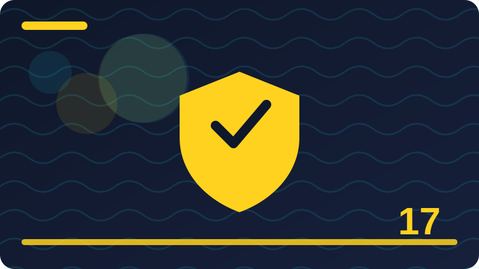

Chapter 17: Encryption in Plain Words

Section 1: What Encryption Really Is
Encryption is a way of scrambling information so that only someone with the right key can unscramble it and read it, and it is one of the oldest ideas in security, now done with mathematics instead of secret codes written by hand. When you encrypt a message, you turn readable text into unreadable text, and when you decrypt it, you turn it back, using a key that acts like a password for the scrambling process itself. Anyone who intercepts the scrambled text without the key sees only nonsense, which is why encryption protects information even when it travels across networks you do not control or sits on devices that might be lost or stolen. It is important to understand what encryption does and does not promise: it promises secrecy for the scrambled content, but it does not promise that the sender is who they claim to be, that the message was not copied, or that the device holding the key is safe. Those promises come from other tools, which you will meet later in this chapter. Encryption is used everywhere in modern life, often without you noticing: when you visit a secure website, when you send a message on an encrypted app, when you unlock a phone whose storage is encrypted, and when you back up files to a service that encrypts them. You do not need to understand the mathematics to use encryption well, just as you do not need to understand engine mechanics to drive safely, but you do need to understand the key ideas: what is scrambled, who holds the key, and what happens if the key is lost. A key that is shared carelessly, stored with the locked data, or chosen weakly undermines the whole system, no matter how strong the mathematics is. In this chapter you will learn encryption in plain words, from its basic lock-and-key picture to the everyday checks that confirm it is actually protecting you. The goal is calm confidence: knowing when encryption is working for you, when it is not, and what to do about it. Notice how often encryption already works for you without any action on your part, because that invisibility is a sign of good design. Your phone encrypts its storage, your browser negotiates secure connections, and your messaging app locks conversations, all in the background, and you benefit without studying mathematics. That invisibility has a cost, though, which is that you may not notice when encryption is missing, and missing encryption looks exactly like working encryption to a casual glance. The habit that closes that gap is verification, which you will practise later in this chapter: a glance at a padlock, a check of a setting, a confirmation that a conversation is end-to-end encrypted. Invisible protection plus occasional verification is a strong combination, because it gives you both convenience and confidence, and it keeps you from depending on a feature that silently switched off. Check: In your own words, what does encryption change about a message, and what single thing is needed to reverse it?
Section 2: The Lock and Key Analogy
The most helpful picture for encryption is a lock and a key, because it captures the essential relationship between scrambling and unscrambling without any mathematics. Imagine you write a letter, place it in a box, and lock the box with a padlock; anyone who finds the box can carry it, shake it, and try to peek inside, but without the key they cannot read the letter. Encryption works the same way: the scrambled message is the locked box, and the key is what opens it, except that the lock is mathematical rather than metal, and the box can travel across the internet in an instant. This analogy also explains why the key matters more than the box: a strong box with a key left taped to its lid protects nothing, just as strong encryption with a key stored beside the data, or shared with strangers, protects nothing. It also explains why you should not worry about someone seeing the locked box itself: seeing scrambled text is expected and harmless, because the protection lives in the key, not in hiding the box. There are limits to the analogy, and knowing them prevents confusion later. A real padlock has one key, while modern encryption often uses key pairs, where one key locks and a different key unlocks, and you will learn that idea soon. A real key can be copied by a locksmith, while a good digital key is a long random number that cannot be guessed or copied by looking at the lock. A real box can be broken open with force, while good encryption cannot be broken by trying every key, because there are too many keys to try in any reasonable time. Despite those limits, the lock-and-key picture remains the right starting point, because it answers the most important question a beginner can ask: what actually keeps my message safe? The answer is not the scrambling alone, nor the software alone, but the combination of strong scrambling and a key that only the right people hold. Keep that picture in mind, and every later idea in this chapter will have a place to sit. The lock-and-key picture also helps when someone asks why encryption cannot simply be broken by a clever thief, because it reframes the question around the key rather than the lock. A thief who finds a locked box does not need to understand lock-making to try the obvious attacks: searching for the key, guessing common keys, or finding a copy left nearby. Digital thieves do the same, which is why key handling, password strength, and recovery storage matter far more than the choice between two strong methods. When you hear about an encryption failure in the news, ask first whether the key was stolen, guessed, or left exposed, because that is the most common story, and it is also the story you can prevent with careful habits. The lock is strong; guard the key. Check: What does the lock-and-key analogy get right about encryption, and where does it break down?
Section 3: Plaintext and Ciphertext
Two words carry the whole vocabulary of encryption, and learning them early makes everything else easier to read. Plaintext is information in its readable form: your message as you typed it, your file as you normally open it, your password as you remember it. Ciphertext is the same information after encryption: scrambled, unreadable, and useless to anyone without the key. Encryption is the process that turns plaintext into ciphertext, and decryption is the process that turns ciphertext back into plaintext, and those two directions are the whole story at its simplest. It helps to notice that plaintext is not a judgement about whether information is plain or boring; it is simply the technical name for the readable version, even if the content is deeply personal. Similarly, ciphertext is not a judgement about secrecy in general; it is the scrambled version produced by a specific encryption process with a specific key. When you read about a data breach, one of the most important questions is whether the stolen data was plaintext or ciphertext, because stolen ciphertext without its key is far less useful to a thief than stolen plaintext. That is why responsible services encrypt stored data: even if a thief somehow copies the storage, the copy is scrambled, and the thief still faces the key. You should also notice that your own computer constantly converts between these forms: when you open an encrypted file with the right key, you see plaintext on your screen, even though the file on the disk may be stored as ciphertext. The conversion happens so smoothly that you may never notice it, which is good design, but it also means you should check that encryption is actually enabled, rather than assuming it from a smooth experience. Plaintext and ciphertext are the before and after of encryption, and once those two words feel natural, the rest of the chapter's vocabulary will feel like variations on a theme you already understand. Plaintext and ciphertext also appear in a third, everyday form that is worth recognising: the decrypted view on your screen. When you open an encrypted message or file, your device decrypts it for display, and at that moment the information is plaintext again, visible to anyone who can see your screen or use your unlocked device. That is normal and necessary, because you cannot read ciphertext, but it means encryption's protection pauses while you work, and resumes when you lock the device or close the file. Screen privacy, locking habits, and malware protection therefore belong in the same conversation as encryption, because they guard the plaintext moments. A complete picture of encryption includes both states, the scrambled storage and the readable display, and the transitions between them are where daily habits matter most. Check: What is the difference between plaintext and ciphertext, and why does it matter in a data breach?
Section 4: Keys in Plain Words
A key in encryption is a secret value, usually a long string of random characters or numbers, that controls how plaintext is scrambled into ciphertext and how ciphertext is unscrambled back into plaintext. The key is not the same as a password, though passwords are often used to protect keys, and that distinction matters: a password is something you remember, while a key is something a computer generates and stores, and keys are far longer and more random than anything a person could memorise. The security of encryption rests almost entirely on the key, because the scrambling method itself is usually public and well studied, and attackers already know how it works. What they do not know is your key, and as long as that stays true, the ciphertext stays safe. This is a profound and reassuring idea: you do not need a secret method, you need a secret key, and the method can be public, tested by experts, and improved over time without weakening your protection. Keys must be random, because a predictable key can be guessed, and they must be long enough that guessing every possibility would take longer than the age of the universe with current computers. Keys must also be stored safely, because a key saved in the same place as the ciphertext, or sent over an insecure channel, defeats the encryption it was meant to enable. When you set up encrypted storage or an encrypted backup, the system will usually generate a key for you and protect it with your password or your device's unlock method, and your job is to keep that password strong and to keep a recovery option safe. Losing a key is as serious as losing the data itself, because ciphertext without its key is unreadable even to its owner, and that permanence is both encryption's strength and its warning. Treat keys like the master keys to a building: generated carefully, stored carefully, shared rarely, and never left lying around. Keys also have a lifecycle that is worth understanding in plain terms, because keys are created, used, stored, backed up, and eventually retired, and each stage needs care. A key that is created badly, from a predictable source, is weak from birth, no matter how carefully it is stored afterwards. A key that is stored well but never backed up can be lost with a single device failure, taking its data with it. A key that is kept long past its usefulness can become a liability, because old keys for old data are easy to forget and hard to revoke. Good systems handle most of this lifecycle automatically, rotating temporary keys per connection and retiring old ones, but for keys you manage yourself, such as a backup passphrase, the lifecycle is your responsibility. Treat a key like a living thing with a beginning, a working life, and an end, and give each stage the attention it deserves. Check: Why can the encryption method be public while the key must stay secret?
Section 5: Symmetric Encryption: One Key for Both Directions
Symmetric encryption is the simpler of the two main kinds of encryption, and it uses one single key both to lock and to unlock. You encrypt a file with a key, and anyone who has that same key can decrypt it, which makes symmetric encryption fast, efficient, and ideal for encrypting large amounts of data, such as a whole hard drive, a backup, or a long video file. The name "symmetric" comes from the symmetry of the arrangement: the same key on both sides, like a single house key that both locks and unlocks the front door. The strength of symmetric encryption is its speed and simplicity, and modern symmetric methods are extremely strong when used with a long, random key. Its weakness is key sharing: if you want to send an encrypted file to a friend, you must somehow get the key to that friend safely, and if the key travels over an insecure channel, an eavesdropper can capture it and decrypt everything. That sharing problem is the reason symmetric encryption alone is not enough for the internet, where strangers need to communicate securely without first meeting to exchange a key. In practice, symmetric encryption is used constantly behind the scenes, even in systems that appear to use other methods, because once two parties have safely agreed on a shared key, symmetric encryption does the heavy lifting of scrambling the actual data quickly. Your phone's storage encryption, your encrypted backup, and the bulk of a secure website connection all rely on symmetric encryption at their core. For your own use, symmetric encryption is what you meet when you encrypt a file with a password, encrypt a USB drive, or turn on full-disk encryption, because in each case one key, protected by your password or device, does both jobs. The lesson is practical: symmetric encryption is excellent for protecting your own data, and its one hard problem, sharing the key safely, is solved by the second kind of encryption, which you will meet next. Symmetric encryption also appears in a place you may not expect, which is the protection of your own secrets at rest on devices you already own. When you enable full-disk encryption, a single symmetric key, itself protected by your sign-in secret, scrambles the entire drive, and every file you save is encrypted automatically without you choosing per file. That automatic coverage is symmetric encryption's gift to busy people, because it removes the decision from every save and replaces it with one good setup decision. The trade-off is that the whole drive shares one protection, so a weak sign-in secret weakens everything at once, which is why that secret deserves to be strong and unique. One key, well protected, guarding everything, is a simpler system to understand and to keep safe than many keys managed by hand. Check: What is symmetric encryption's main strength, and what is its main sharing problem?
Section 6: Asymmetric Encryption: A Pair of Keys
Asymmetric encryption solves the key-sharing problem with an elegant idea: instead of one key, it uses a pair of keys that are mathematically linked, one public and one private. The public key can be shared with anyone, because it can only lock, not unlock, while the private key must be kept secret, because it is the only key that can unlock what the public key locked. Imagine a mailbox with a slot that anyone can drop letters into, but only the owner with the mailbox key can open it and read them: the slot is the public key, and the mailbox key is the private key. Anyone can send you a secret message using your public key, and only you, holding the private key, can read it, even though you never met the sender or shared a secret in advance. This solves the internet's stranger problem beautifully, because public keys can be published openly without weakening security. Asymmetric encryption is slower than symmetric encryption, so it is rarely used to scramble large files directly; instead, it is used to agree safely on a symmetric key, which then does the fast work of encrypting the actual data. That combination, asymmetric for agreement and symmetric for bulk scrambling, is how most secure connections work, and it gives you the best of both worlds. The private key's secrecy is critical: if someone copies your private key, they can read messages meant for you and impersonate you in some systems, so private keys must be stored securely, protected by strong passwords, and never sent over insecure channels. Asymmetric encryption also enables digital signatures, which you will learn about later, where the private key signs and the public key verifies. For now, hold the mailbox picture firmly: public locks, private unlocks, and the pair together lets strangers communicate securely without first sharing a secret. That idea reshaped the internet, and it is worth understanding even if you never generate a key pair yourself. The mailbox picture for asymmetric encryption also explains why public keys can be published in directories and on websites without danger, which surprises many beginners. Publishing your public key is like publishing the address of your mailbox slot: it tells the world where to deliver secret letters, but it does not give anyone the ability to open the box and read them. That openness is what makes the internet's secure communication possible at scale, because strangers can find your public key, lock a message, and send it, all without a prior meeting. It also means you should not be alarmed if you learn that your public key is publicly visible; that visibility is by design, and the secrecy lives entirely in the private key. If someone ever claims your public key is a leak, you can calmly explain that it is a delivery address, not a secret. Check: How does a public-private key pair let a stranger send you a secret message safely?
Section 7: Public Keys and Private Keys in Daily Life
You already use public and private keys in daily life, even though they are usually hidden behind friendly screens and you never see the keys themselves. When you visit a secure website, the site presents a public key, wrapped in a certificate you will learn about soon, and your browser uses it to agree on a secret for that visit, so your passwords and messages travel scrambled. When you send a message on an end-to-end encrypted app, your device uses the recipient's public key to lock the message, so only the recipient's private key, held on their device, can unlock it. When you sign into a service with a modern passkey, a private key stays on your device and a public key is stored by the service, so the service never holds a secret that could be stolen and reused. In each case, the pattern is the same: the public part travels freely, the private part stays home, and security comes from that separation. The most important habit this pattern teaches is about private keys: never share them, never paste them into a website, never email them to anyone, and be suspicious of any message that asks for one, because no legitimate service needs your private key. If a service asks for your private key, it is either badly designed or a scam, and you should stop and seek trusted advice. Private keys are also worth backing up carefully in the systems that allow it, because losing a private key can mean losing access to encrypted messages or accounts, and recovery options vary by system. You do not need to manage keys manually in most daily tools, because the tools generate and store them for you, but understanding the pattern helps you judge tools: a tool that keeps private keys on your device and publishes only public keys is following the right design, while a tool that asks you to hand over private keys is not. That judgement, applied calmly, protects you across websites, apps, and future tools you have not met yet. Public and private keys also appear in the modern sign-in methods that are replacing passwords, and recognising them there will help you adopt those methods confidently. A passkey, for example, keeps a private key on your device and gives the service only the public key, so a breach of the service reveals nothing that can be used to sign in as you. That design fixes a whole category of password problems at once, because there is no shared secret to steal, guess, or reuse. When a service offers passkeys, using them is usually a genuine upgrade, provided you keep your device's unlock method strong and you understand the service's recovery options. The pattern you learned here, public travels, private stays home, is the same pattern, applied to signing in, and its familiarity should make the new method feel less strange and more trustworthy. Check: What should you do if a website or message asks you for your private key, and why?
Section 8: How Two Strangers Agree on a Secret
The question of how two strangers agree on a secret over an insecure channel is one of the cleverest problems in security, and its solution is worth appreciating even in plain words. If two people want to communicate securely but have never met, they cannot simply send a symmetric key in plain text, because anyone listening would capture it. Asymmetric encryption solves this by letting them use public keys to protect the agreement itself: one side generates a temporary symmetric key, locks it with the other side's public key, and sends the locked version, which only the other side's private key can open. Once both sides hold the same temporary key, they switch to fast symmetric encryption for the actual conversation, and the temporary key is discarded when the conversation ends, so a later compromise cannot retroactively unlock old conversations. This property, called forward secrecy, is a valuable bonus: even if a long-term private key is stolen later, past conversations locked with temporary keys stay safe. The agreement must also be authenticated, meaning each side needs confidence that the public key really belongs to the person they think it does, rather than to an impostor who intercepted the exchange. That authentication is provided by certificates and trust systems, which you will meet shortly, and without it, a clever eavesdropper could substitute their own public key and sit in the middle, reading everything. The full picture is therefore three steps: authenticate the other side's public key, use it to agree on a temporary symmetric key, and then encrypt the conversation symmetrically. Modern browsers and messaging apps perform these steps in less than a second, without you noticing, and that invisibility is a triumph of design. Your job as a user is not to perform the steps, but to notice when they are missing: a browser warning about a certificate, or a messaging app warning that a contact's key changed, is a signal that authentication may have failed, and it deserves attention rather than a quick dismissal. Agreeing on a secret also depends on timing, because temporary keys are meant to be short-lived, and their short life is a feature, not a flaw. A temporary key that exists only for one conversation limits what an attacker gains from stealing it later, because the conversation it protected is already over, and its key is already discarded. This is why secure connections generate fresh keys for each visit, rather than reusing one long-term key for everything, and why a system that reuses temporary keys carelessly is weaker than one that generates them freshly. For you as a user, the practical point is that you do not need to manage these temporary keys at all; your browser and apps handle them, and your job is simply to use current software that generates them properly. Freshness is a quiet protection, and it works best when it is invisible. Check: What are the three steps by which two strangers agree on a secret, and why does authentication matter?
Section 9: Passwords Are Not Encryption Keys
Passwords and encryption keys are often confused, because both are secrets that protect things, but they play different roles and have different strengths, and confusing them leads to weak protection. A password is a secret you memorise and type to prove who you are, and it is usually short, human-readable, and reused across services, which makes it relatively weak as a scrambling secret. An encryption key is a long, random value generated by a computer, far too long to memorise, and used directly by the scrambling mathematics, which makes it strong but impossible to remember. Systems bridge the gap by using your password to protect your key: when you encrypt a drive or a file with a password, the system derives a key from your password using a slow, deliberate process, and then uses that key for the actual encryption. The strength of the result depends on both parts: a strong method with a weak password still yields weak protection, because an attacker can guess the password and derive the key. That is why encryption protected by "123456" is barely encryption at all, while the same encryption protected by a long, unique passphrase is genuinely strong. It is also why password managers matter for encryption: they let you use long, random passwords for the things that protect your keys, without needing to memorise them all. Another difference is what happens when each secret is stolen: a stolen password can be changed, while a stolen key may require re-encrypting everything, which is a larger job. For your own practice, the rule is simple: use long, unique passphrases wherever encryption depends on a password, store those passphrases in a password manager or another safe place, and never assume that encryption alone compensates for a weak password. Encryption is a strong lock, but a password is the key to that lock's key, and a weak password leaves the strong lock easy to open. Passwords and keys also differ in how they fail, which is worth knowing when you judge a security incident. A leaked password can be changed quickly, and the change immediately invalidates the old secret, which is why services urge you to change a password after a breach. A leaked key is harder to fix, because data already encrypted with it remains readable to whoever holds it, and fixing the leak may require re-encrypting everything, which is a larger operation. That difference explains why systems protect keys more carefully than passwords, storing them in secure hardware or encrypted stores, while passwords are allowed to be memorised and typed. It also explains why you should treat a request for a key, or a file containing a key, with far more suspicion than a request for a password, because keys are harder to revoke and their compromise lasts longer. Check: Why does encrypting a file with a weak password give weak protection even if the encryption method is strong?
Section 10: Encryption at Rest: Protecting Stored Data
Encryption at rest means encrypting data while it is stored, sitting on a disk, a phone, a USB drive, or a backup, rather than while it is travelling, and it protects you mainly against loss, theft, and unauthorised copying of the storage itself. If your laptop is stolen, encryption at rest means the thief cannot simply remove the drive and read your files on another computer, because the files are scrambled without your key. If a backup drive is lost in transit, encryption at rest means the finder sees ciphertext, not your documents and photos. If an old computer is sold or recycled, encryption at rest, combined with proper disposal, means the next owner cannot recover your deleted files from the disk. The most common form of encryption at rest for individuals is full-disk encryption, which scrambles everything on the drive and unlocks it when you sign in, and you will learn more about it later in this chapter. File and folder encryption is a narrower form, where you encrypt specific files or folders, which is useful for sharing a single sensitive document or for protecting files on a shared computer. Cloud storage encryption is another form, where files are scrambled before or after upload, and the important question there is who holds the key: if the provider holds it, the provider can read your files, while if only you hold it, even the provider cannot. Encryption at rest does not protect data while you are actively using it, because an unlocked computer shows plaintext to anyone who can use it, and it does not protect against malware running on your unlocked machine, which sees the same plaintext you see. It is a guard for the stored, locked state, not for the open, working state, and understanding that boundary prevents false confidence. For your own routine, turning on full-disk encryption and encrypting sensitive backups are two of the highest-value steps you can take, because they protect everything at once, quietly, with no daily effort after setup. Encryption at rest also protects you in a scenario people rarely consider, which is the repair shop or the second-hand market. When you hand a computer to a technician, or sell it to a stranger, the drive inside contains traces of your life, from documents to browsing history to deleted files, and encryption at rest means those traces are scrambled without your key. That protection lets you seek repairs or pass on a device with far less worry, provided you also perform a proper reset and, for highly sensitive devices, consider key destruction. It also protects you against a quieter risk, which is the old drive you forgot in a drawer: an encrypted old drive is a harmless object, while an unencrypted one is a time capsule of personal data waiting for anyone who finds it. Encrypting at rest turns old devices from liabilities into inert objects. Check: What threat does encryption at rest protect against, and what threat does it not protect against?
Section 11: Encryption in Transit: Protecting Data on the Move
Encryption in transit means encrypting data while it travels across a network, from your device to a website, a mail server, or another person, and it protects you against eavesdroppers who can observe the network along the way. When you use a cafe's Wi-Fi, anyone else on that network, or anyone operating it, could potentially observe unencrypted traffic, but encrypted traffic appears as scrambled nonsense to them, even though they can see that you are communicating and roughly how much data is moving. The most familiar example is the secure web, where the "https" in an address and the padlock symbol indicate that your browser and the website have agreed on encryption for that visit. Mail in transit is also often encrypted between servers, though the level of protection varies, and messaging apps that promise end-to-end encryption extend transit encryption so that even the service provider cannot read the messages. Transit encryption is negotiated fresh for each connection, using the stranger-agreement steps you learned earlier, and it is discarded afterwards, which limits the damage if any single connection's key is later exposed. It is important to understand what transit encryption leaves visible, because that visibility surprises many people: an observer can usually still see which website or service you contacted, the timing and size of your traffic, and your device's address, even though the content itself is scrambled. That visible information is called metadata, and you will learn more about it later, because it matters for privacy even when content is protected. Transit encryption also depends on authentication, because encryption to the wrong party is worse than useless: it gives you confidence while delivering your secrets to an impostor. Browser certificate warnings are therefore transit-encryption warnings, and they deserve attention, not dismissal. For your daily practice, the rule is straightforward: prefer encrypted connections everywhere, look for https on websites that handle accounts or personal details, and treat a browser warning as a stop sign until you understand it. Transit encryption is the reason public Wi-Fi is usable at all for ordinary tasks, and it is a layer you should expect, check for, and never switch off casually. Transit encryption also protects the integrity of what you receive, not just its secrecy, which is a benefit people often overlook. Without it, an observer on the network could not only read your traffic but alter it, inserting false content into a page, replacing a download with a harmful one, or redirecting you to a fake site. Encryption in transit, combined with authentication, prevents that tampering, because altered ciphertext fails to decrypt correctly or fails its integrity check, and your browser or app will warn you rather than silently showing altered content. That integrity protection is why secure connections matter even for public information, such as news pages, where secrecy seems unnecessary but tampering could still mislead you. A page you read over an encrypted connection is a page you can trust to be the page the site actually sent, and that trust matters for everything from news to software downloads. Check: What does encryption in transit hide from a network observer, and what does it still leave visible?
Section 12: HTTPS and the Padlock in Plain Words
HTTPS is the secure version of the web's basic protocol, and the padlock symbol in your browser's address bar is its friendly face, but both deserve a little more understanding than a glance. When you visit a site over HTTPS, your browser and the site first authenticate each other, using a certificate that proves the site's identity, and then they agree on encryption for everything that follows, so your passwords, messages, and browsing on that site travel scrambled. The padlock tells you that this encrypted, authenticated connection is in place, and clicking it reveals details: who the certificate was issued to, who issued it, and whether the connection is genuinely secure. The padlock does not tell you that a site is honest, trustworthy, or safe to buy from, because a dishonest site can obtain a certificate too, and many phishing sites now display padlocks. That distinction is crucial: the padlock means the connection is private between you and that site, not that the site itself is good. A phishing site with a padlock will still steal a password you type into it, because the encryption faithfully protects your password on its way to the thief. You should therefore use the padlock as one check among several: look at the address itself for misspellings and impersonation, consider whether you expected to be on that site, and be suspicious of links that arrived unexpectedly. If the padlock is missing, or the browser shows "not secure," treat that as a warning for any site involving accounts, payments, or personal details, and avoid entering sensitive information there. Modern browsers also warn loudly when a certificate is invalid, expired, or mismatched, and those warnings mean the authentication step failed, so the encrypted connection cannot be trusted to reach the right party. HTTPS has become the default for most of the web, which is good news, and your job is no longer to seek it out specially, but to notice when it is absent or when a warning appears, and to treat those moments as reasons to pause. The padlock is a useful signal, and like all signals, it is most valuable when you know exactly what it does and does not say. The padlock also has a history worth knowing, because it teaches you why browser warnings look the way they do today. In the early web, secure sites were rare, and the padlock was a special mark of a careful site; today, secure sites are the norm, and browsers increasingly treat the absence of security as the warning, rather than the presence of security as a badge. That shift reflects a maturing internet, where encryption is expected rather than exceptional, and it means your attention should focus on warnings and absences, not on celebrating every padlock you see. When a familiar site suddenly loses its padlock or shows a warning, that change from the norm is information, and it deserves a pause. Browsers are slowly training users to expect security by default, and your habit of noticing exceptions aligns perfectly with that direction. Check: What does a browser padlock prove, and what important thing does it not prove?
Section 13: End-to-End Encryption Explained
End-to-end encryption is a stronger promise than ordinary transit encryption, and its name describes exactly what it means: a message is encrypted on the sender's device and decrypted only on the recipient's device, so no one in between, including the service provider, can read it. In ordinary transit encryption, your message is encrypted to the service's server, decrypted there, and then re-encrypted to the recipient, which means the service itself can read it, even if outside eavesdroppers cannot. End-to-end encryption removes that middle readability, so the provider holds only ciphertext and cannot hand over readable messages even if asked, because it does not hold the keys. This is why messaging apps that offer end-to-end encryption make a point of saying so, and why the promise matters most for private conversations, where the participants want privacy from everyone except each other. The protection depends on keys held on the participants' devices, and on verifying that the keys really belong to the intended recipient, which is why some apps offer a safety number or a verification code you can compare with your contact in person or through another channel. If a contact's key changes unexpectedly, the app may warn you, and that warning deserves attention, because it can mean the contact got a new phone, or it can mean something more suspicious. End-to-end encryption does not make a conversation perfectly private in every sense: the provider can still see metadata, such as who messaged whom and when, and anyone with access to an unlocked phone can read the messages on that phone. It also does not protect you if the recipient shares the conversation, screenshots it, or has malware on their device. Understanding both the strength and the limits lets you use end-to-end encryption wisely: choose it for private conversations, verify keys for sensitive contacts, keep your device locked and updated, and remember that the endpoints, your device and theirs, are part of the security. End-to-end encryption is a powerful promise, and like all powerful promises, it is most useful when you know precisely what it covers. End-to-end encryption also changes what a provider can promise in a crisis, which is a useful test of whether the promise is real. A provider that genuinely cannot read your messages cannot hand over readable messages to anyone, even when ordered to, because it does not hold the keys, and it will say so plainly. A provider that claims end-to-end encryption but can recover your messages on request is not offering the same protection, whatever its marketing says, and that distinction is worth checking in a provider's own documentation. You can test the promise with a simple question: if this provider were compelled to hand over my messages, what would it actually have to hand over? If the answer is ciphertext, the promise is real; if the answer is readable text, it is not. That question cuts through marketing and reveals the architecture underneath, which is the only thing that matters when privacy is tested. Check: How does end-to-end encryption differ from ordinary transit encryption, and who can read the message in each case?
Section 14: What End-to-End Encryption Does Not Cover
End-to-end encryption is often described as if it made a conversation completely private, but several important things remain outside its protection, and knowing them prevents a false sense of safety. First, metadata remains visible to the provider and to network observers: who contacted whom, when, how often, and how much data moved, even though the words themselves are scrambled. Metadata can reveal a great deal, such as a pattern of late-night conversations with a particular contact, and it is not covered by the encryption of content. Second, the endpoints remain vulnerable: if your phone is unlocked and in someone else's hands, or if it carries malware, the messages are readable on the device itself, because encryption protects the journey, not the destination's screen. Third, backups can weaken the promise: if a messaging app backs up your conversations to a cloud service without end-to-end encryption on the backup, the backup becomes a readable copy outside the encrypted conversation, and you should check your backup settings. Fourth, the recipient is a free agent: they can screenshot, forward, or quote your messages, and no encryption can prevent a trusted recipient from sharing what you sent them. Fifth, group conversations multiply the endpoints, because every member's device is an endpoint, and the conversation is only as secure as the least secure member's device. Sixth, verification matters: if you never verify a contact's key, you are trusting the provider to have given you the right key, and that trust is usually reasonable but not absolute. None of this makes end-to-end encryption useless; it makes it specific, and specific tools are best used with specific expectations. Use it for private content, protect your device, check your backup settings, verify keys for sensitive contacts, and remember that metadata and endpoints are separate problems with separate solutions. A clear view of what is not covered is what lets you enjoy what is covered without illusion. What end-to-end encryption leaves out also includes the simple fact that people talk about their conversations outside the app, which no technology can prevent. A recipient may mention your message to a friend, quote it in another chat, or describe it in person, and those human disclosures are beyond any app's control. That is not a flaw in the encryption, but a reminder that technical privacy and social privacy are different things, and that choosing what to share, and with whom, remains a human judgement. Encryption can ensure that only the intended recipient receives the message technically, but it cannot ensure that the recipient treats it as you hoped. For sensitive matters, that means choosing recipients carefully, being mindful of what you put in writing at all, and remembering that the most private conversation is sometimes the one that happens face to face, with no record. Technology extends trust; it does not replace it. Check: Name three things end-to-end encryption does not protect, and what you can do about each one.
Section 15: Hashing Is Not Encryption
Hashing is often confused with encryption, because both turn readable data into unreadable-looking output, but they are fundamentally different, and the difference matters for passwords and for verifying files. Encryption is reversible: with the right key, ciphertext becomes plaintext again, and that reversibility is the whole point. Hashing is one-way: a hash function turns input into a fixed-length fingerprint, called a hash, and there is no key that turns the hash back into the original input. You can hash the same input again and compare the fingerprints to check whether two inputs match, but you cannot reverse a hash to recover the input, which is why responsible services store password hashes rather than passwords themselves. When you sign in, the service hashes the password you typed and compares it with the stored hash, so it never needs to keep your actual password, and a thief who steals the hash database still does not have your passwords directly. Hashes are also used to verify files: if you download a file and its hash matches the hash published by the maker, you can be confident the file was not altered in transit, because even a tiny change produces a completely different hash. Weaknesses exist, and they are instructive: if a password is short and common, an attacker can hash many guesses quickly and compare them with a stolen hash, which is why services add salt, a random value mixed into each password before hashing, and use slow hashing methods that make guessing expensive. For your own practice, you do not need to compute hashes by hand, but you should recognise the vocabulary: when a service says it hashes passwords, that is a good sign, and when a download page offers a hash for verification, checking it is a sensible step for important software. Hashing and encryption are cousins, not twins, and knowing which one you are dealing with tells you what protections you actually have. Hashing also has a visible everyday use that you may already have met without realising, which is the verification of downloaded software. When a software maker publishes a file, it often publishes the file's hash alongside it, and you can compute the hash of the file you downloaded and compare the two, confirming that your copy matches the maker's original. If the hashes match, the file was not altered or corrupted in transit; if they differ, you should not run the file, and you should download it again from a trusted source. This check takes only a moment with a standard tool, and it is especially worthwhile for operating systems, security tools, and any software you will trust deeply. Hashing for verification is a quiet, practical habit, and it shows how a one-way fingerprint can protect you without any secrecy at all, simply by making tampering detectable.
# Defensive helper: verify a file you downloaded against the
# hash published by its maker. Run it on your own file only.
import hashlib
path = input("File to check: ")
digest = hashlib.sha256()
with open(path, "rb") as f:
for chunk in iter(lambda: f.read(8192), b""):
digest.update(chunk)
print("SHA-256:", digest.hexdigest())
print("Compare this with the hash published by the maker.")Check: Why is hashing suitable for storing passwords, while encryption would be a poorer choice for that job?
Section 16: Digital Signatures in Plain Words
A digital signature is a way of proving that a message or a file really came from its claimed sender and has not been altered, and it uses asymmetric keys in the opposite direction from encryption. To sign something, the sender uses their private key to produce a signature tied to that exact content, and anyone can verify the signature using the sender's public key, confirming both the sender and the integrity of the content. If even one character of the content changes after signing, the signature no longer matches, so tampering is detectable, and if someone else tries to forge a signature, they would need the sender's private key, which they do not have. This gives you two properties that encryption alone does not: authenticity, meaning the content came from the claimed sender, and integrity, meaning it was not changed along the way. Digital signatures are used quietly everywhere: software updates are signed so your computer can verify they came from the maker, websites present signed certificates so your browser can verify their identity, and documents can be signed so recipients can verify their origin. A signature does not hide content, so a signed message can still be readable by anyone, and signing is often combined with encryption when both secrecy and authenticity are needed. For your own life, the most visible encounter with signatures is probably a software update or a browser warning: when your computer refuses an update because its signature does not verify, it is protecting you from a tampered or fake update, and you should not bypass that refusal casually. Similarly, when a document's signature is reported as invalid, treat the document as untrusted until you can verify it through another channel. Digital signatures turn the key pair into a seal: private signs, public verifies, and the seal breaks if the content is altered. That seal is one of the quiet foundations of trust on the internet, and understanding it helps you recognise why some warnings matter so much. Digital signatures also protect the software supply chain, which is the long journey software takes from its maker to your computer, and that journey has many points where tampering could occur. A signed update lets your computer verify, at the moment of installation, that the update came from the maker and was not altered by a mirror site, a network attacker, or a compromised download. Without signatures, you would have to trust every link in that chain blindly, and a single compromised link could deliver harmful software to millions. That is why operating systems refuse unsigned or badly signed updates by default, and why bypassing such a refusal is dangerous: you are not merely ignoring a warning, you are removing the check that protects the whole chain. When your computer insists on a valid signature, it is acting as your agent, and letting it do so is one of the easiest security decisions you will ever make. Check: What two properties does a digital signature give you that encryption alone does not?
Section 17: Certificates and the Chain of Trust
A certificate is a digital document that binds a public key to an identity, such as a website's name, and it is signed by a trusted authority, so that strangers can trust the binding without meeting in person. When you visit a secure website, the site presents its certificate, your browser checks that it was signed by an authority your browser trusts, that it names the site you intended to visit, and that it has not expired or been revoked, and only then does it proceed with encryption. This system is called a chain of trust, because the site's certificate is signed by an intermediate authority, which is signed by a root authority, and your browser trusts the root, so trust flows down the chain. The authorities, called certificate authorities, are organisations that verify identities before issuing certificates, with more thorough checks for certificates that display an organisation's name. The system is not perfect: a certificate authority can make mistakes, a certificate can be issued for a misleading but similar name, and a compromised authority could issue false certificates, which is why browsers also use additional checks like certificate transparency logs, which publicly record issued certificates so misuse can be spotted. For you as a user, the practical lesson is about warnings: a browser warning that a certificate is invalid, expired, self-signed, or mismatched means the chain of trust has failed for that site, and proceeding anyway means encrypting to a party whose identity is unproven. Most of the time, such warnings indicate a misconfigured site or a captive network login page, but sometimes they indicate an attack, and you cannot tell which from the warning alone, so the safe response is to stop and use another way to reach the service, or to ask a trusted helper. Certificates are the internet's identity documents, and like physical identity documents, they deserve a careful look when something about them does not match. Trust, in this system, is delegated and checkable, and your browser does the checking for you, as long as you heed its warnings. Certificates also expire, and expiry is a normal part of the system, not a sign of wrongdoing, though it still requires action. A certificate is issued for a limited period, often a year or less, so that a compromised or forgotten certificate does not remain trusted forever, and so that the issuing authority can re-verify the identity periodically. When a site's certificate expires, browsers warn you, and the site's administrators must renew it, which is usually an automated process but sometimes fails, leaving a warning that users must heed. For you, an expired certificate warning means the site's identity proof is out of date, and you should avoid sensitive actions there until it is renewed, even if the site looks familiar. Expiry is therefore a safety feature disguised as an inconvenience, because it forces periodic re-verification in a system where identities and ownership change over time. Check: What does a browser check before trusting a website's certificate, and what should you do if it warns you?
Section 18: Why Strong Encryption Matters for Everyone
Strong encryption matters for everyone, not just for people with secrets, because it protects the ordinary details of daily life that become dangerous in bulk: your messages to family, your health searches, your banking, your location, and your children's photos. Without encryption, those details travel and sit in forms that anyone along the path can read, copy, and store, and the harm is not always immediate or obvious. A single exposed message may be harmless, but a collection of exposed details can reveal routines, relationships, finances, and vulnerabilities that enable fraud, stalking, or impersonation. Strong encryption also protects the systems everyone relies on: banks, hospitals, power grids, and election infrastructure all depend on encryption to keep their operations safe from tampering and eavesdropping. When people argue that only wrongdoers need encryption, they overlook that encryption is infrastructure, like locks on doors: everyone benefits from locks, even people with nothing to hide, because locks prevent a wide range of harms that have nothing to do with secrecy for its own sake. Weak encryption, or encryption with a backdoor that only "good" parties can use, undermines that infrastructure, because a backdoor built for one party can be found and used by others, and there is no reliable way to keep such a door exclusive. That is why security experts defend strong, uncompromised encryption as a public good, and why you should be suspicious of products that promise encryption but reserve a master key for themselves or for third parties. For your own choices, prefer tools that use strong, standard encryption, that explain who holds the keys, and that do not claim to be able to read your end-to-end encrypted messages, because that claim contradicts the promise. Strong encryption is not about hiding; it is about keeping everyday life private by default, and that privacy is a foundation for safety, dignity, and free communication for everyone. Strong encryption also protects people who are more vulnerable than average, which is a reason to support it even if you personally feel you have little to hide. Journalists protecting sources, doctors protecting patients, activists organising under hostile regimes, and ordinary people escaping abusive relationships all depend on encryption that cannot be casually defeated. When strong encryption is weakened for everyone, those people lose protection first and most severely, because their adversaries are the most motivated and best resourced. Supporting strong encryption is therefore partly an act of solidarity, recognising that a tool you use for convenience may be a lifeline for someone else. That perspective does not require you to become an advocate; it simply asks you to prefer tools that protect everyone strongly, and to be sceptical of proposals that would weaken encryption in the name of convenience or control, because the cost of weakening falls unevenly. Check: Why is the argument "only people with secrets need encryption" mistaken?
Section 19: Weak Encryption and Outdated Methods
Encryption methods age, and a method that was strong decades ago can become weak as computers grow faster and attackers discover flaws, which is why staying with current, standard methods matters. Older methods sometimes used short keys that modern computers can try exhaustively, or designs that leak patterns, allowing an attacker to recover plaintext without the key. When you hear that a method is "deprecated" or "broken," it means experts no longer trust it for new protection, and you should avoid it even if it still appears in old software or old guides. A common example in everyday life is old Wi-Fi security, where an early method can now be defeated quickly, while its modern replacement is far stronger, and the same pattern applies to old web encryption versions that browsers now refuse. Another weakness comes from implementation mistakes rather than the method itself: a product that uses a strong method but generates keys predictably, reuses keys carelessly, or stores keys beside the data can be weak despite its strong label. That is why experts advise using well-tested libraries and standard settings rather than inventing your own encryption, because even small mistakes in implementation can undo strong mathematics. For your own practice, you rarely need to choose a method directly, because your browser, your phone, and your operating system choose for you, but you can still make good decisions: keep software updated so old methods are retired, prefer services that describe their encryption in current terms, and be wary of products that boast about custom, secret encryption, because secrecy of method is a warning sign, not a strength. If a guide tells you to enable an old option for compatibility, ask whether the compatibility is worth the weakness, because compatibility with an insecure past is often a poor trade. Strong encryption is a moving standard, and keeping up with it is mostly a matter of keeping your software current and trusting standard tools over clever-sounding novelties. Outdated methods also linger in old devices and old software, which is a practical problem for households with gadgets that are no longer updated. An old router, an old phone, or an old smart device may only support outdated encryption, and continuing to use it for sensitive tasks exposes you to attacks that modern devices resist. The remedy is not always to discard the device immediately; sometimes it can be retired to a less sensitive role, such as a device that never handles accounts or personal data, or placed on a separate network segment. When a device can no longer be updated and must handle sensitive data, replacement becomes the safer choice, and that decision is easier to make when you understand why the old method is weak. Keeping an inventory of old devices, and their update status, is a small household habit that prevents outdated encryption from lingering unnoticed. Check: Why is a product boasting about "secret, custom encryption" a warning sign rather than a strength?
Section 20: Brute Force: Trying Every Key
Brute force is the simplest attack on encryption: trying every possible key, one after another, until the right one is found, and understanding it explains why key length and password strength matter so much. With a short key, brute force is feasible, because the number of possibilities is small enough for a computer to try them all quickly; with a long, random key, brute force becomes infeasible, because the number of possibilities is astronomically large, far beyond what any computer could try in a human lifetime. A key of 128 bits, for example, has more possibilities than there are atoms in the observable universe many times over, and even a supercomputer trying billions of keys per second would not make a dent. That is why modern encryption is considered safe against brute force when it uses standard key lengths and random keys: the mathematics does not need to be unbreakable in principle, only infeasible in practice. Brute force becomes practical again when the key is derived from a weak password, because the attacker does not need to try every key, only the keys derived from likely passwords, and humans choose predictable passwords. That shortcut, called a dictionary attack, is why a strong passphrase matters so much for encrypted files and drives: it closes the shortcut and forces the attacker back to the infeasible full search. Defenders also slow brute force deliberately, by using key derivation processes that take noticeable time per guess, so that even a dictionary attack becomes expensive. For your own practice, the lesson is encouraging: you do not need to outsmart attackers with cleverness, you need to deny them shortcuts, by using long, random keys where the system generates them, and long, unique passphrases where you choose them. Brute force is a reminder that security often comes down to numbers: make the number of possibilities so large, and the cost of each guess so high, that trying becomes pointless. Brute force also explains why attackers prefer to steal databases rather than attack encryption directly, because a stolen database lets them try guesses offline, at full speed, without being locked out or noticed. That is why a service that stores password hashes well, with salt and slowness, still matters enormously, and why a service that stores passwords poorly turns a breach into a catastrophe. For you, the defence against offline guessing is the same as before: long, unique passwords, because each additional character multiplies the attacker's work, and a password manager makes long passwords practical. It is also why you should change passwords promptly when a service reports a breach, even if the service says passwords were hashed, because hashing slows guessing but does not make a weak password safe forever. Offline guessing is a race between your password's strength and the attacker's speed, and a long password wins that race by a wide margin. Check: Why does a weak password make brute-force attack feasible even when the encryption method uses long keys?
Section 21: Key Length in Plain Words
Key length is measured in bits, and it describes how many possible keys exist, which is why longer keys are generally stronger, though the relationship is not as simple as "longer is always proportionally better." Each additional bit doubles the number of possible keys, so a 128-bit key has twice as many possibilities as a 127-bit key, and vastly more than a 64-bit key, which is why the jump from short keys to standard lengths was such a leap in security. Modern symmetric encryption commonly uses 128-bit or 256-bit keys, both of which are considered safe against brute force with current technology, and the choice between them rarely matters for an individual user. Asymmetric keys are measured differently, because their mathematics is different, so a 2048-bit asymmetric key and a 128-bit symmetric key are not directly comparable, even though both are considered strong today. What matters for you is not memorising numbers, but recognising the pattern: standard lengths recommended by experts are safe, short or non-standard lengths are a warning sign, and a product that does not state its key length at all deserves a question. Key length also interacts with time: a key length that is safe today may become less safe as computers improve, which is why standards are reviewed and increased over decades, and why keeping software updated matters. Quantum computing, which you will meet later, could change the picture for some asymmetric methods, but it does not change the basic lesson that standard lengths, chosen by experts and implemented in standard tools, are the right default. For your own decisions, do not chase the largest number as a shopping criterion, because a 256-bit key used with a weak password is weaker in practice than a 128-bit key protected by a strong passphrase and good key handling. Key length is one ingredient in a recipe that also includes randomness, implementation quality, and key management, and a good cook cares about the whole recipe, not just one ingredient. Trust standard lengths, focus on passwords and key handling, and let the experts argue about the numbers. Key length also matters differently for keys that must last a long time, such as keys that protect archives or identity documents, because a key that is safe for a year may not be safe for a decade. Long-lived keys deserve the strongest standard lengths available, and they deserve periodic review, because the threat landscape changes over their lifetime. Short-lived keys, such as the temporary keys of a single web visit, can use standard lengths without the same concern, because they expire before any long-term attack could succeed. That distinction helps you judge advice about key lengths calmly: a recommendation to use a longer key for a root certificate or an archive is sensible, while a demand for the longest possible key for a fleeting connection is unnecessary. Time is part of key strength, and matching the key's lifetime to its length is a quiet piece of good key management. Check: Why does each extra bit double the number of possible keys, and why is key length alone not enough?
Section 22: Randomness: The Quiet Ingredient
Randomness is the quiet ingredient that makes encryption work, because a key is only strong if it is unpredictable, and predictability is the enemy of every lock. If a key is generated from a predictable source, such as the time of day, a simple counter, or a short list of words, an attacker can guess the source and reproduce the key without brute-forcing the whole space. Good key generation therefore uses a source of true unpredictability, often gathered from physical processes in your device, such as tiny variations in timing, electrical noise, or other hardware events that cannot be predicted from outside. Operating systems provide a secure random generator for this purpose, and well-written software uses it, which is why you should prefer standard tools over home-made key generators. Randomness also matters for other values in encryption, such as the temporary keys used in each connection and the salts added to password hashes, because reusing or predicting those values can weaken otherwise strong systems. A famous lesson from security history is that several serious flaws came not from broken mathematics, but from poor randomness: keys that were predictable because the generator was seeded badly, or because two devices generated the same key by chance. For your own practice, randomness is mostly something to trust rather than to manage, because your operating system and your reputable apps handle it, but there are two habits worth keeping. First, do not invent your own method for picking keys or passwords by hand, such as using dates or patterns, because human choices are far more predictable than they feel. Second, use a password manager's generator for passwords that protect encryption, because it draws on the system's secure randomness rather than your habits. Randomness is invisible when it works, and its failures are invisible too, until they are exploited, which is why trusting standard generators and avoiding hand-made secrets is one of the most valuable invisible habits you can adopt. Randomness also matters when you create a passphrase by hand, because human-chosen passphrases cluster around familiar patterns, such as names, dates, and common phrases, which attackers exploit. A passphrase generated by a password manager, drawing on secure randomness, avoids those clusters entirely, and it can be both long and forgettable, because the manager remembers it for you. If you prefer a passphrase you can remember, choose several unrelated words at random, rather than a meaningful sentence, because randomness in word choice is what makes the passphrase strong, not its grammar. Dice-based methods, where words are chosen by rolling dice against a word list, are a respected way to generate a memorable yet random passphrase, and they illustrate the principle beautifully: randomness you can see and trust. However you generate it, the goal is the same, which is unpredictability, and human intuition is a poor judge of it, so lean on tools and methods that are random by construction. Check: Why does a predictable key-generation method undermine encryption even if the method itself is strong?
Section 23: Encrypting Your Own Files Safely
Encrypting your own files is a practical skill worth learning, because it lets you protect a sensitive document, a folder of personal records, or a backup before you share or store it somewhere less trusted. The safest approach for most people is to use the encryption built into their operating system or a reputable, standard tool, rather than downloading an unfamiliar program that promises encryption, because built-in tools are maintained, tested, and integrated with your system's key handling. On many systems you can encrypt a single file or folder with a few clicks, choosing a strong passphrase to protect it, and the system will handle the key generation and scrambling for you. When you encrypt a file to share with someone else, think carefully about how you will share the passphrase: sending it in the same message as the file defeats the purpose, so use a separate channel, such as telling the person in person, or sending the passphrase through a different, trusted medium, and only after confirming the recipient's identity. Keep an unencrypted copy only where it is safe, such as on your encrypted main drive, and remember that encrypting a copy does not erase other copies that may exist in downloads, temporary folders, or cloud sync. If you encrypt a file and then forget its passphrase, the file is effectively lost, so store the passphrase in your password manager before you delete the original. Test the process with an unimportant file first: encrypt it, delete the original test file, decrypt the copy, and confirm it opens, so you learn the steps without risking anything precious. Encrypting your own files is not a daily chore for most people, but it is a valuable occasional skill, and practising it once with a test file means you will be calm and competent when a genuinely sensitive file needs protection. Encrypting your own files also teaches you about the copies you did not intend to make, because modern systems copy files in many quiet ways. A file you encrypt may already exist in a cloud sync folder, in a backup, in a temporary folder, or in an email attachment you sent earlier, and encrypting one copy does not encrypt the others. Before you rely on encryption for a sensitive file, take a moment to think about where else that file may live, and whether those copies need the same protection or should be deleted securely. That copy-awareness is a valuable habit beyond encryption, because it applies to sharing, backups, and disposal as well. A file's security is the security of all its copies, and the most careful encryption of one copy cannot protect a forgotten copy left in an old folder. That copy-awareness also applies to screenshots and downloads, which are copies people forget even more easily than cloud sync. Check: Why should you never send an encrypted file and its passphrase through the same message?
Section 24: Full-Disk Encryption on Your Computer
Full-disk encryption scrambles everything on your computer's drive, including the operating system, your programs, and your files, and it unlocks automatically when you sign in with your password, PIN, or biometrics. Its great advantage is completeness: you do not need to decide which files are sensitive, because everything is protected, including temporary files, deleted-file remnants, and system caches that you might forget contain personal data. If your laptop is stolen while switched off, or its drive is removed, the thief faces ciphertext, not your documents, and that protection holds even if the thief is technically skilled, as long as your sign-in secret is strong. Full-disk encryption is built into modern systems under friendly names: BitLocker on Windows, FileVault on macOS, and LUKS-based encryption on many Linux systems, and turning it on is usually a guided process that takes some time while the drive is scrambled in the background. Before you turn it on, take two precautions: back up your important files first, because any disk operation carries a small risk, and make sure you know your recovery key or recovery option, storing it somewhere safe and separate from the computer, such as printed and kept at home or stored in a trusted account. The main limitation is the unlocked state: while you are signed in and using the computer, your files are decrypted for your use, so anyone who can use your unlocked computer, or malware running on it, sees plaintext, which is why locking your screen matters. Full-disk encryption also does not protect data you send over the network, which needs transit encryption, nor does it protect against a weak sign-in secret. Despite those limits, it is one of the highest-value protections available, because it is comprehensive, largely automatic after setup, and it guards the common disaster of a lost or stolen device. If your computer offers it and it is not yet on, turning it on, after a backup and a recovery-key note, is a genuinely worthwhile afternoon task. Full-disk encryption also interacts with repair and recovery in ways worth planning for, because a repair technician who cannot unlock your drive cannot test it fully, and a recovery service cannot recover data from a drive whose key is lost. Before handing a computer for repair, back up your files, note your recovery key, and consider whether the repair genuinely needs the drive unlocked, or whether the drive can be removed first. Those preparations protect both you and the technician, because they prevent a situation where your data is exposed or lost during a routine fix. Planning for repair is part of encryption planning, not an afterthought, and it is easiest to do while the computer is healthy and in your hands. A little preparation turns a repair from a risk into a routine. Check: What two precautions should you take before turning on full-disk encryption, and why?
Section 25: Encrypted Backups and Why They Matter
A backup is a copy of your files kept for recovery, and an encrypted backup is a copy that is scrambled, so that the copy itself does not become a new vulnerability. This matters because backups often live in riskier places than your main computer: a portable drive that travels, a cloud account that could be breached, or a friend's house for safekeeping, and an unencrypted backup in any of those places exposes everything it contains. Encrypting the backup means that even if the drive is lost or the cloud account is accessed by someone else, the files remain ciphertext without the key. Many backup tools offer encryption as an option, and you should turn it on, choosing a strong passphrase and storing that passphrase safely, because a backup whose passphrase is lost is as useless as no backup at all. Test your encrypted backup before you rely on it: restore a single unimportant file from it, confirm it opens, and confirm you know the passphrase, because a backup you have never restored is a hope, not a plan. Also think about who holds the key for cloud backups: some services encrypt your backup with a key they hold, which protects against outsiders but not against the provider itself, while others offer encryption with a key only you hold, which protects against the provider too but makes recovery entirely your responsibility. Either can be reasonable, but you should know which you have chosen, because the difference matters if the provider is ever compelled to hand over data. Keep at least one backup copy separate from your main computer, and keep its passphrase separate from the backup itself, so that a single theft or disaster cannot take both. Encrypted backups close a common gap in personal security, where the main computer is carefully guarded but its copy is left open, and closing that gap turns a good backup habit into a genuinely safe one. Encrypted backups also need a schedule for testing, because a backup that is tested only when disaster strikes is a backup that may fail when it matters most. Choose a simple rhythm, such as restoring one file every few months, and keep a note of each test, including the date and the result, so you can see that the habit is alive. Testing also keeps your passphrase fresh in your practice, because a passphrase you have not typed in a year is a passphrase you may have forgotten, and discovering that during a test is far better than discovering it during a crisis. A backup test is a small, calm rehearsal for an event you hope never happens, and rehearsals are what turn plans into capabilities. Make the test a habit, and the backup becomes something you trust with evidence, not merely with hope. Check: Why does an unencrypted backup undermine otherwise good security, and what should you test before relying on one?
Section 26: Messaging Encryption Versus Storage Encryption
Messaging encryption and storage encryption protect different moments in a file or message's life, and confusing them can leave a gap you did not expect. Messaging encryption, especially end-to-end encryption, protects a message while it travels and while it is stored by the service, so that intermediaries cannot read it. Storage encryption, such as full-disk encryption, protects files while they sit on your device, so that a thief with the device cannot read them. A message can therefore be protected in transit but readable on an unlocked phone, or protected on disk but readable by a messaging service that does not offer end-to-end encryption, and both gaps are real. The practical lesson is to ask, for each sensitive item, where it lives and where it travels, and to ensure both moments are covered. A sensitive photo, for example, may travel through an end-to-end encrypted message, then sit in your phone's gallery, then be backed up to a cloud service, and each of those stages needs its own protection: encrypted messaging for the journey, full-disk encryption for the phone, and encrypted backup for the cloud copy. If any stage is unprotected, that stage is where exposure can happen, and attackers and accidents both find the weakest stage. You do not need to audit every photo this way, but for genuinely sensitive material, a quick journey check is worthwhile: how did it arrive, where does it sit now, and where is it copied? That check often reveals a surprise, such as a messaging app whose backups are unencrypted, or a cloud gallery that is not protected by the same encryption as the message that delivered the photo. Covering both the journey and the resting place is the complete picture, and it is why this chapter treats transit and rest as partners rather than alternatives. A message is only as private as its least protected stage, and knowing the stages lets you protect each one deliberately. The journey-and-resting-place check also applies to work documents, which often travel through one system and rest in another. A document emailed to a colleague, stored in a shared drive, and then downloaded to a laptop has passed through three stages, each with its own protection, and a gap at any stage exposes it. Workplaces often provide tools that cover all stages consistently, such as a managed drive with encryption at rest and in transit, and using those tools instead of personal workarounds keeps the stages aligned. If you must use a personal tool for work, check its stages deliberately, because a personal tool chosen for convenience may protect the journey but not the resting place, or vice versa. The check takes a minute, and it prevents the common surprise of a document that was safe in transit but exposed at rest. Check: Give an example of a message that is protected in transit but exposed at rest, and how you would fix it.
Section 27: Metadata: What Encryption Leaves Visible
Metadata is data about data: who communicated with whom, when, for how long, how much, and from where, and it remains visible even when the content itself is encrypted, which makes it an important privacy topic. When you visit an encrypted website, an observer may not read the page's content, but they can often see the site's address, the time of your visit, and the amount of data exchanged, and over time those observations can reveal habits, interests, and relationships. When you send an end-to-end encrypted message, the provider may still know the sender, the recipient, the time, and the message size, and that knowledge can be revealing in bulk, even though the words are hidden. Metadata is sometimes dismissed as harmless because it is "just" timing and addresses, but investigators, advertisers, and attackers all value it precisely because patterns are powerful: a pattern of calls to a clinic, a lawyer, or a journalist tells a story even without words. Reducing metadata exposure is harder than encrypting content, because some metadata is necessary for delivery itself: a message must carry a destination to arrive, and a connection must carry an address to connect. Tools that reduce metadata, such as privacy-focused networks, exist, but they involve trade-offs in speed, convenience, and trust, and they are beyond what most beginners need. For everyday practice, the useful habits are modest: be aware that metadata exists, prefer services that minimise the metadata they collect and retain, review privacy settings that control what is logged, and remember that encryption of content is necessary but not sufficient for full privacy. If you need stronger metadata protection for a specific, sensitive purpose, seek specialist advice rather than assuming an encrypted app alone provides it. Knowing what encryption leaves visible is not a reason to abandon encryption; it is a reason to use it with open eyes, and to treat metadata as a separate concern with its own, more limited, everyday solutions. Metadata awareness also changes how you judge a service's privacy claims, because a service that encrypts content but collects extensive metadata is making a narrower promise than its advertising may suggest. Reading a service's privacy policy with metadata in mind, looking for what it collects, how long it retains it, and with whom it shares it, gives you a clearer picture than the word encrypted alone. Services that minimise metadata, retain it briefly, and explain their practices plainly deserve more trust than services that are vague about it, even if both encrypt content equally. That judgement does not require technical skill, only a willingness to ask what else, besides content, a service learns about you. Metadata is the shadow of your communication, and a service's handling of that shadow is part of its privacy promise. Check: Why can metadata be revealing even when message content is fully encrypted?
Section 28: Encryption and Passwords Working Together
Encryption and passwords are partners, and understanding their partnership helps you build a system where each covers the other's weakness. Encryption provides the strong scrambling, while passwords provide the human-memorable secret that protects the key, unlocks the device, or proves your identity to a service. A strong password protecting a strong encryption system is a formidable combination, while a weak password protecting the same system is a weak combination, because the password is the easiest point of attack. Password managers strengthen the partnership enormously, because they let you use long, random passwords for the accounts and encrypted stores that matter, without memorising them, and they can generate passphrases for encrypted files and backups. Two-factor authentication adds another partner, by requiring something you have, such as your phone, in addition to something you know, so that a stolen password alone is not enough. The partnership also has a failure mode worth knowing: if you forget the password that protects an encrypted drive or backup, and no recovery option exists, the data is lost, because the encryption is doing its job and refusing entry without the key. That is why recovery options, such as a printed recovery key kept safely, are part of good encryption practice, not an afterthought. For your own setup, build the partnership deliberately: use a password manager, give your encrypted drive and your important backups strong, unique passphrases, enable two-factor authentication where it is offered, and store recovery keys somewhere safe and separate. Test the recovery path once, with an unimportant item, so you know it works before you need it. Encryption, passwords, and second factors together form a small team, and a team that is set up thoughtfully protects you far better than any single member alone, no matter how strong that member claims to be. The partnership of encryption and passwords also extends to the devices that store them, because a password manager itself must be protected by a strong master password and, where available, a second factor. That master password is the key to all your other passwords, and therefore to the encryption those passwords protect, so it deserves to be the strongest password you own, unique and memorable through a passphrase you can recall. Losing it can lock you out of everything, so its recovery option, such as a printed copy kept safely or a trusted recovery method, deserves the same care as an encryption recovery key. A password manager is a vault, and a vault is only as good as its door and its spare key, so give both the attention they deserve, and the partnership will serve you well for years. Give your master password the same protection you would give a house key, because it guards everything else you own digitally. Check: How does a password manager strengthen the partnership between encryption and passwords?
Section 29: Losing Keys and the Recovery Problem
Losing an encryption key is one of the few security failures that cannot be fixed by resetting a password, because ciphertext without its key is designed to be unreadable, even to its owner, and that permanence cuts both ways. It is encryption's greatest strength against thieves, and its greatest risk for forgetful owners, which is why key recovery deserves planning before you encrypt anything important. The safest approach is to create a recovery option at setup time, when you still have access, and to store it separately from the encrypted data: a printed recovery key in a safe place at home, a recovery key stored in a trusted account, or a passphrase recorded in your password manager, depending on what the system offers. The recovery option itself must be protected, because anyone who finds it gains the same access as the key, so it should not be taped to the device, emailed to yourself unencrypted, or stored in the same cloud folder as the encrypted backup. Some systems offer account-based recovery, where proving your identity to the provider restores access, which is convenient but means the provider holds a path to your data, and you should understand that trade-off before choosing it. Other systems offer no recovery at all, by design, which maximises privacy but means a lost key is final, and those systems deserve extra care and extra backups of the key itself. A practical rule is to never encrypt the only copy of something important without first securing its recovery option and testing it, because encryption without recovery planning turns a protective act into a gamble. Test recovery with a small, unimportant encrypted item first, so you learn the process while the stakes are low. Losing a key is not a hypothetical worry; it happens to careful people through forgotten passphrases, lost devices, and damaged paper, and the difference between a minor inconvenience and a permanent loss is almost always a recovery plan made in advance. Key loss also has a human side that is worth planning for, which is what happens to your encrypted data if you are incapacitated or unavailable. Family members or colleagues who may need access to important files, such as financial records or a will, cannot use encryption that only you can unlock, unless you have arranged a safe way for them to do so. Some people keep a sealed envelope with recovery information in a safe place known to a trusted person, while others use a password manager's emergency access feature, and either approach requires thought about who is trusted and how they will know. Planning for that scenario is uncomfortable but kind, because it prevents your protection from becoming a barrier for the people who may need to help you. Encryption protects the living; a recovery plan protects the people who may act on your behalf. Check: Why must a recovery key be stored separately from the encrypted data, and what happens if no recovery option exists?
Section 30: Quantum Computing and Encryption in Plain Words
Quantum computing is often mentioned as a future threat to encryption, and it deserves a calm, honest explanation rather than hype or dismissal. A quantum computer is a different kind of computer that can solve certain mathematical problems far faster than ordinary computers, and some of those problems are the ones that make today's asymmetric encryption, the public-private key kind, secure. If a sufficiently powerful quantum computer were built, it could break many current asymmetric methods, which would affect secure websites, messaging, and digital signatures that rely on them. Symmetric encryption is less affected, because quantum computing gives a smaller speed-up against it, and doubling key lengths is generally considered enough to preserve its security. The important context is timing and transition: powerful quantum computers capable of breaking current asymmetric encryption do not yet exist for practical use, experts disagree about when, if ever, they will, and the security community is already developing and standardising new asymmetric methods designed to resist quantum attacks, often called post-quantum cryptography. Those new methods are beginning to appear in browsers, messaging apps, and standards, and the transition will take years, during which old and new methods will coexist. For you as an individual, the practical advice is reassuringly ordinary: keep your software updated, because updates will deliver post-quantum methods as they are standardised, prefer services that track current standards, and do not panic about messages you send today, because most everyday messages lose their sensitivity long before any quantum threat could matter. Long-term secrets, such as state archives or medical records kept for decades, face a different calculation, which is why institutions are planning earlier, but that planning is not a burden for ordinary users. Quantum computing is a real, long-term consideration for encryption, and it is being handled by the same process that has always kept encryption strong: research, standardisation, and updates, delivered to you through the software you already keep current. Quantum computing also illustrates why the security community values crypto-agility, which is the ability to switch encryption methods without rebuilding everything. Systems designed with agility can adopt post-quantum methods as they are standardised, while systems hard-coded to one method face a painful replacement. For you, agility appears as software updates that quietly introduce new methods, and keeping software updated is how you benefit from it. It also appears in the advice to use standard libraries rather than custom code, because standard libraries will gain post-quantum support from their maintainers, while custom code will not. Agility is an invisible design virtue, but it is the reason the internet can adapt to a future threat without breaking, and your habit of updating is how you participate in that adaptation. Your updates are the delivery mechanism for that future, so keeping them on is the simplest quantum preparation you can make. Check: Why is quantum computing a bigger concern for asymmetric encryption than for symmetric encryption?
Section 31: Encryption Myths That Mislead People
Myths about encryption mislead people in both directions, making some feel safer than they are and others feel that encryption is pointless, and correcting the common ones is worth a section of its own. One myth is that encryption makes you anonymous, but encryption hides content, not identity, and observers can still see addresses, timing, and patterns, so anonymity needs separate tools and habits. Another myth is that encrypted means unhackable, but encryption protects content, not endpoints, so malware on your device, a weak password, or a careless recipient can all defeat it without breaking any mathematics. Another myth is that only criminals need encryption, which ignores that encryption protects banking, health, family, and business for everyone, and that a world without it would expose ordinary life to anyone listening. Another myth is that a padlock means a website is trustworthy, but a padlock proves only that the connection is encrypted to that site, not that the site is honest, and phishing sites use padlocks too. Another myth is that deleting a file is the same as encrypting it, but deletion often leaves recoverable traces, while encryption protects the content itself, and the two are different actions for different purposes. Another myth is that free encryption is weak and paid encryption is strong, but many of the strongest tools are free and open, while some paid products use weak or secret methods, so price is a poor guide to strength. The antidote to each myth is the same plain question: what exactly does this tool protect, from whom, and under what conditions? When you ask that question, myths lose their power, because they depend on vague promises rather than specific protections. Encryption is a strong, specific tool, and respecting its specificity is what lets you use it well, without either false confidence or needless fear. Myths also persist because encryption is invisible, and invisible things invite imagination to fill the gaps. When people cannot see encryption working, they invent stories about what it does, and those stories spread faster than careful explanations. The remedy is not more technical detail, but more visible verification: a padlock you can click, a setting you can check, a conversation marked as encrypted, all make the invisible slightly visible. Each time you verify encryption for yourself, you replace imagination with evidence, and each time you show someone else how to verify it, you replace their imagination too. Visibility, even partial, is the enemy of myth, and it is a habit you can practise in minutes. Each verification you perform is a small vote for evidence over imagination, and evidence is what keeps security honest. Verification turns a vague feeling into a checkable fact, and checkable facts are the foundation of real confidence. Check: Pick one encryption myth from this section and explain the specific truth that replaces it.
Section 32: Encryption and the Law: A General Picture
Encryption exists inside laws that vary by country, and while this book cannot give legal advice, a general picture helps you think about the topic responsibly and avoid common misunderstandings. In many countries, using encryption for your own data and communications is legal and common, and it is built into ordinary products, from phones to browsers, without any special permission. Some countries restrict or regulate certain encryption tools, require registration, or limit the strength of encryption that may be exported, and travellers should be aware that a tool legal at home may face different rules elsewhere. Law enforcement debates about encryption often concern whether providers should be able to decrypt user data when ordered to, and whether a backdoor for lawful access can be built safely, and security experts generally argue that such a backdoor cannot be kept exclusive to lawful users, because any built-in weakness can be found and exploited by others. For ordinary users, the practical implications are modest: use standard, reputable encryption tools, respect the laws of the country you are in, and do not use encryption to hide wrongdoing, because encryption protects privacy, not impunity, and it does not prevent investigation through other evidence, such as devices, witnesses, or metadata. If you face a legal demand involving encrypted data, seek qualified legal advice rather than improvising, because the correct response depends on your jurisdiction and circumstances. Businesses and organisations often have additional obligations, such as protecting customer data with encryption under privacy laws, and those obligations are a reason encryption is now a standard business practice, not an exotic choice. The general picture is therefore reassuring: for lawful, everyday use, encryption is a normal, encouraged part of digital life, and the debates that make headlines concern edge cases and policy, not whether ordinary people may protect their own files and messages. Stay informed about your own country's rules, use standard tools, and treat encryption as a responsible habit rather than a secret one. Legal pictures also change over time, and a law that is settled today may be debated tomorrow, which is why staying informed through reputable news sources matters more than memorising a single rule. If you travel, a quick check of local rules before departure is a sensible precaution, just as you would check visa or customs rules, and it avoids surprises at borders where devices may be inspected. For most travellers, the practical steps are simple: use standard tools, keep personal data minimal on travelling devices, and know that a border inspection is a different situation from everyday use, with its own considerations. Legal awareness, like security awareness, is a habit of checking before acting, not a body of law to memorise, and a few minutes of checking before a trip is usually enough. Check: Why do security experts argue that a lawful-access backdoor cannot be kept exclusive to lawful users?
Section 33: Verifying That Encryption Is Actually On
Encryption that you assume is on, but is not, is a quiet danger, because it gives you confidence without protection, and verifying it is a short habit worth building. On your computer, you can check full-disk encryption status in your system settings: Windows shows BitLocker status, macOS shows FileVault status, and Linux systems show their disk encryption status in their disk tools, and each one should report that encryption is on and protection is active. In your browser, you can check that a site uses HTTPS by looking at the address and the padlock, and by clicking the padlock to see the certificate details, especially before entering a password or payment information. In a messaging app, you can check whether a conversation is end-to-end encrypted by looking at the app's conversation information, and for sensitive contacts, you can verify their safety number or key through a separate channel. For a cloud backup or storage service, you can check its settings and its help pages to see whether encryption is enabled and who holds the key, because those details are often described in plain language once you look. Verification is not a one-time event, because settings can change after updates, after reinstalling an app, or after switching devices, so a brief check after any major change is sensible. If you find encryption off where you expected it on, turn it on, and if a service does not offer the encryption you expected, consider whether a different service fits your needs better. You do not need to verify everything every day; a short check when you set something up, and another after a major change, covers most cases. The habit of verifying replaces assumption with evidence, and evidence is what turns a security feature from a marketing claim into a protection you can rely on. Make verification a small part of setup, and encryption will rarely surprise you. Verification also benefits from a buddy system, because a second pair of eyes catches what familiarity misses. Ask a trusted friend or family member to check your encryption settings with you, or check theirs together, turning a solitary chore into a shared habit. That shared check often surfaces a setting one of you had misunderstood, or a device one of you had forgotten, and it normalises encryption as a household topic rather than a private worry. It also means someone else knows, in general terms, how your protections are set up, which can help if you ever need assistance. Verification done together is verification done twice as well, and it builds a small community of people who check rather than assume. A shared check also gives you a reason to talk about security regularly, which keeps the topic normal rather than frightening. Check: What would you check to verify encryption is on for your disk, your browser, and your messaging app?
Section 34: Encrypting Email in Plain Words
Email encryption is less straightforward than messaging encryption, because email was designed decades ago without it, and different systems have added it in different ways, which is worth understanding before you rely on it. Most email today is encrypted in transit between servers, which protects it from casual network eavesdropping, but it is often readable by the mail providers along the way, because they need to process, filter, and store it. End-to-end email encryption, where only the sender and recipient can read the message, exists through standards that use public and private keys, but it requires both sides to set it up, exchange keys, and use compatible tools, which is why it is less common than end-to-end messaging. For most people, the practical approach to sensitive email is layered: use a reputable provider that encrypts mail in transit and at rest, use strong passwords and two-factor authentication for the account, avoid sending highly sensitive details by email when a more secure channel is available, and consider an encrypted messaging app or a secure file-sharing link for the most sensitive items. If you do set up end-to-end email encryption, keep your private key safe and backed up, because losing it can mean losing access to your encrypted mail, and test the setup with a willing contact before using it for anything important. Be wary of services that promise "encrypted email" without explaining who holds the keys, because that phrase can mean transit encryption, storage encryption, or end-to-end encryption, and those are very different promises. Ask the plain question: who, besides the recipient, can read this message? If the answer includes the provider, then the encryption is not end-to-end, whatever the marketing says. Email remains a useful, universal tool, and understanding its encryption limits lets you use it wisely: for ordinary messages it is fine, for sensitive material it deserves a more secure channel or a properly set-up end-to-end system. Email encryption also has a future worth watching, because providers and standards bodies continue to work on making end-to-end email easier, with better key discovery and simpler setup. As those improvements arrive through updates, end-to-end email may become as easy as end-to-end messaging is today, and the barrier of both sides needing setup may fall. Until then, the layered approach remains the sensible one, and you should revisit your email choices when a provider announces a genuine improvement, rather than assuming the landscape is fixed. Technology improves in steps, and a habit of revisiting old decisions when new options appear keeps your protections current without requiring constant attention. Email's encryption story is unfinished, and that is a reason for patience, not for despair. Revisiting old decisions when new options appear is a habit that keeps every part of your security current, not just email. Check: Why is email encryption less straightforward than messaging app encryption, and what question clarifies a provider's promise?
Section 35: Secure Deletion Versus Encryption
Secure deletion and encryption are two different answers to the problem of getting rid of data safely, and knowing when to use each prevents a common mistake. Deletion, in the ordinary sense, usually just removes the directory entry that points to a file, leaving the file's contents on the disk until they are overwritten, which means deleted files can often be recovered with simple tools. Secure deletion overwrites the file's contents, sometimes several times, so recovery becomes difficult or impossible, though on modern solid-state drives, overwriting is less reliable because the drive itself manages storage in ways the operating system cannot fully control. Encryption offers a different solution: if a drive or file is encrypted and you destroy the key, the ciphertext that remains is unreadable, even though the scrambled data is still physically present, and this approach, sometimes called cryptographic erasure, is reliable even on solid-state drives. That is one reason full-disk encryption is so valuable when you sell, donate, or recycle a computer: encrypting the drive first, and then destroying the key or resetting the device, leaves the next owner with ciphertext rather than recoverable files. For a single sensitive file, encrypting it and then deleting the plaintext original is safer than deleting alone, provided you also consider copies in backups, temporary folders, and cloud sync. The practical routine for disposing of a device is therefore: back up what you want to keep, ensure full-disk encryption is on, perform the maker's factory reset or secure erase, and, for highly sensitive devices, consider physical destruction of the drive if you can do so safely. Secure deletion and encryption are partners here, not rivals, and using encryption first makes deletion's job far easier, because the thing being deleted is already scrambled. When in doubt about a device's past contents, encryption plus reset is the safer assumption to make. Secure deletion also matters for the small, everyday items people forget, such as printed documents, old notes, and screenshots, because data is not only digital files on a drive. A printed password, a photographed document, or a screenshot of a sensitive message can all outlive their usefulness and become exposures in their own right. Treating those items with the same care, shredding paper, deleting screenshots you no longer need, and clearing old downloads, completes the picture that secure deletion and encryption begin. The principle is the same in every medium: when information is no longer needed, remove it thoroughly, and when it must be kept, protect it with encryption. That principle, applied consistently across paper and pixels, is what makes deletion a habit rather than an event. The same principle applies to old devices themselves, which should be reset and, where possible, encrypted before they leave your hands. Check: Why is destroying an encryption key a reliable way to make encrypted data unrecoverable, even on a solid-state drive?
Section 36: Encryption on Phones in Plain Words
Phones are among the most personal devices people own, and modern phones protect them with encryption that is largely automatic, which is good news for users who never think about it. When you set a passcode, fingerprint, or face unlock on a modern phone, its storage is encrypted with keys tied to that unlock method, so a thief who steals a locked phone cannot simply read its files by connecting it to another computer. The encryption is strongest when the phone is fully off or has just restarted, before the first unlock, because at that point the keys are not yet available in memory; after the first unlock, some data becomes available to the running system, though it remains protected by the lock screen and by app-level protections. That distinction is why a strong passcode matters more than a short one, and why biometric unlock is convenient but should be paired with a strong fallback passcode, because the passcode is the ultimate key to the encryption. Phone backups deserve attention too, because a backup stored in the cloud may not carry the same encryption as the phone itself, and you should check whether your backup is end-to-end encrypted or merely encrypted with a key the provider holds. Messaging apps on phones add their own encryption, which you learned about earlier, and that encryption is separate from the phone's storage encryption, so both need to be on for full protection. If you sell or give away a phone, use the maker's factory reset, which destroys the encryption keys and makes the old data unreadable, rather than merely deleting files one by one. Keeping your phone's software updated also keeps its encryption current, because makers improve encryption and fix flaws through updates. For most people, phone encryption is a gift of modern design: set a strong passcode, keep updates on, check backup encryption, and use the factory reset before passing the phone on, and the phone's encryption will quietly guard a device that holds much of your life. Phone encryption also depends on the lock screen's timeout, because a phone left unlocked on a table is a phone whose encryption is, for practical purposes, paused. Setting a short auto-lock time, such as thirty seconds or a minute, ensures that a moment's distraction does not become an open device, and it complements the strong passcode you already use. That small setting is easy to overlook, because it feels like an inconvenience, but it is the setting that determines how quickly your phone returns to its protected state after you set it down. Pair a short timeout with the habit of locking manually when you put the phone down, by pressing the power button, and your phone will spend far more of its life in its encrypted, locked state. Small timeouts are a small price for a large gain in protection. Check: Why is a phone's encryption strongest before its first unlock after a restart?
Section 37: Encrypting USB Drives and Portable Storage
Portable storage, such as USB drives and external hard drives, is easy to lose, easy to steal, and easy to leave in a pocket or a bag, which makes encryption for these devices especially important. An unencrypted USB drive containing work documents, family photos, or backup files is a complete copy of that data for anyone who finds it, while an encrypted drive is a scrambled puzzle that needs its passphrase or key. Most operating systems offer built-in encryption for portable drives, and using it is a guided process: choose the drive, choose a strong passphrase, wait while the drive is encrypted, and then test it by locking, removing, and reconnecting the drive to confirm it asks for the passphrase. Keep the passphrase in your password manager, because a portable drive whose passphrase is forgotten is a small, useless brick, and keep a backup of the drive's important contents elsewhere, because encryption does not protect against the drive itself failing. When you share an encrypted drive with someone else, share the passphrase through a separate channel, as you learned for encrypted files, and consider whether the recipient genuinely needs the whole drive or only a single encrypted file from it. Also remember that encryption does not make a drive indestructible: it can still fail, be damaged, or be wiped, so an encrypted drive is a safe carrier, not a backup by itself. If you must carry sensitive data on a portable drive, encryption is not optional, it is the basic precaution that turns a loss from a data breach into a minor inconvenience. The habit is simple: no sensitive data travels on an unencrypted portable drive, ever, and every portable drive you own is either encrypted or contains nothing sensitive. That rule, kept consistently, removes an entire category of worry from your life. Portable drives also deserve a label, not with their contents, but with a neutral mark that lets you identify them without advertising what they hold. A drive labelled with its passphrase, or with a description like family finances, is a gift to anyone who finds it, while a drive labelled with a simple number or colour, recorded in your own notes, lets you identify it without revealing anything. That labelling habit is a tiny piece of operational security, and it costs nothing, yet it prevents a lost drive from announcing its own value. Keep the mapping between labels and contents in your password manager or a safe note, separate from the drive itself, so that identification and access remain separate. A neutral label is a small kindness to your future self, who will thank you for not having written the secret on the outside of the box. Check: What should you do before relying on an encrypted USB drive for important files?
Section 38: Sharing Encrypted Files Safely
Sharing an encrypted file safely involves two separate deliveries, the file and the key, and keeping those deliveries separate is the whole skill. When you encrypt a file for someone else, you create a locked box, and the recipient needs the key to open it, but if you send the key in the same email, message, or package as the file, anyone who intercepts that delivery gains both, and the encryption is pointless. The safer pattern is to send the file through one channel, such as email or a file-sharing link, and the passphrase through a different channel, such as a phone call, a separate messaging app, or an in-person conversation, after confirming you are talking to the right person. For recipients who use public-key encryption, you can encrypt the file with their public key, so only their private key can open it, and no separate passphrase delivery is needed, which is the most elegant solution when both sides support it. Also consider the file's lifetime after sharing: the recipient may store it unencrypted, forward it, or back it up insecurely, and you cannot control those choices, so share only what the recipient genuinely needs, and consider whether a time-limited sharing link or a view-only option would serve better than a permanent file copy. Check that the recipient can actually open the file before you delete your own copy, because an encrypted file that no one can open is not a successful share, it is a loss. Keep a note of what you shared, with whom, and when, especially for work or sensitive material, because that record helps you judge later whether access should be revoked or updated. Sharing encrypted files is a small ceremony of separation: file here, key there, confirmation afterwards, and that ceremony is what turns encryption from a technical feature into a trustworthy exchange between people. Sharing encrypted files also benefits from an expiry mindset, because a share that lives forever is a share that can be misused long after its purpose ends. Where a sharing service offers an expiry date or a limited number of downloads, use it, so that the file's availability ends when its usefulness ends. Where no expiry is offered, note the share in your own records and revisit it, removing access or asking the recipient to delete the file when it is no longer needed. That follow-up is the part of sharing most people skip, and it is the part that prevents old shares from becoming forgotten exposures. A share is a relationship with a lifetime, and managing its ending is as important as managing its beginning. Managing a share's ending is a courtesy to the recipient too, because it tells them clearly when access is no longer expected. Check: Why must the file and its passphrase travel through different channels, and how do you confirm a share succeeded?
Section 39: Encryption for Developers: Use Libraries, Do Not Invent
Developers face a special temptation with encryption, which is to invent their own method, and the security community's advice on this is unanimous and blunt: do not invent your own encryption, use well-tested libraries and standard methods instead. The reason is that encryption is easy to get subtly wrong, even for skilled programmers, because flaws hide in key generation, randomness, padding, authentication, and key storage, and a method that looks correct in testing can fail catastrophically against a knowledgeable attacker. Standard libraries, maintained by experts and reviewed by many eyes, have survived years of scrutiny, and their flaws, when found, are fixed and published, while a home-made method has survived only its author's tests. The defensive developer's job is therefore to choose the right standard tool for the job, use it according to its documentation, keep it updated, and never weaken it for convenience, such as by hard-coding a key, using a short password as a key, or skipping authentication. When you store passwords as a developer, hash them with a slow, salted method designed for passwords, never encrypt them reversibly and never store them in plain text, because a password database is a prime target and hashing limits the damage of a breach. When you handle keys, store them separately from the data they protect, never commit them to shared code repositories, and use your platform's secure storage where available. When you build a feature that sends data, use the platform's secure transport by default, and do not add an option to downgrade it for debugging that could be left on in production. These are defensive practices, and they protect your users as well as your reputation, because a developer who uses standard encryption well is a developer users can trust. The rule is short enough to remember: use libraries, follow their guides, update them, and leave invention to the researchers whose work those libraries embody. Developers also protect users through defaults, because most users accept the default settings of the software they use, and a secure default therefore protects far more people than a secure option buried in settings. If you build software, make the secure choice the default: encryption on, strong methods chosen, keys stored safely, and downgrades refused, so that a user who changes nothing is still protected. That design philosophy, called secure by default, is one of the most powerful defensive ideas in software, because it scales protection to everyone, including people who never read a security guide. As a user, you can favour software whose defaults are secure, and you can notice when a product's default is insecure, because that choice reveals the maker's priorities. Defaults are decisions made on behalf of users, and good defaults are a form of care. Check: Why is inventing your own encryption method dangerous even if you are a skilled programmer?
Section 40: Salting and Slow Hashing for Passwords
When a service stores your password, it should never store the password itself, and the best practice involves two protective ideas that work together: salting and slow hashing. Salting means adding a unique, random value, called a salt, to each password before hashing it, so that two users with the same password end up with different hashes, and an attacker cannot use a single precomputed table of hashes to crack many passwords at once. Each salt is stored alongside its hash, which is safe, because the salt is not secret; its purpose is uniqueness, not secrecy, and uniqueness alone defeats mass precomputation. Slow hashing means using a hashing method deliberately designed to take noticeable time and memory per guess, so that an attacker who steals a hash database cannot try billions of guesses quickly, but must pay a real cost for each attempt. Ordinary fast hashes, designed for checking file integrity, are poor for passwords precisely because they are fast, and fast is the attacker's friend when guessing. Modern password hashing methods combine salting with slowness and memory cost, and they are available as standard libraries, so a developer has no excuse to use a fast hash for passwords. For you as a user, you cannot control how a service stores your password, but you can favour services that describe their password storage in responsible terms, and you can protect yourself regardless by using long, unique passwords, because even a well-salted, slow hash cannot save a password as weak as a common word. If you ever hear that a service stored passwords in plain text, or encrypted them reversibly, treat that as a serious failure, change your password there and anywhere you reused it, and consider whether to keep using that service. Salting and slow hashing are invisible protections, but they are among the most important ones, because they determine how much damage a breach can do after it happens. Salting and slow hashing also teach a broader lesson about defence in depth for stored secrets, because they assume the attacker will eventually obtain the database and plan for that failure. That assumption, that breaches happen, is what separates mature security design from naive design, which assumes the database will never leak. Designing for the breach, by hashing well, salting uniquely, and slowing guesses, limits the damage when the worst happens, and that limitation is often the difference between a contained incident and a catastrophe. As a user, you can apply the same assumption to your own data: assume a service may one day be breached, and therefore use unique passwords everywhere, so that a breach at one service does not cascade to others. Assuming failure, and planning for it, is not pessimism; it is the realism that makes security robust. Check: What does a salt protect against, and why should password hashing deliberately be slow?
Section 41: Transport Mistakes That Weaken Encryption
Encryption in transit can be weakened by small mistakes that are easy to make and hard to notice, and learning the common ones helps you avoid them in your own browsing and building. One mistake is mixing secure and insecure content on the same page, where an encrypted page loads some images or scripts over an unencrypted connection, exposing part of the activity and sometimes creating a path for tampering. Another mistake is ignoring certificate warnings, which usually means proceeding without verified identity, so your encrypted connection may be to the wrong party. Another mistake is using a public Wi-Fi login page that asks for sensitive details before encryption is established, because a captive portal is not a trusted site, and you should avoid entering passwords on it. Another mistake, for developers, is configuring a server to accept outdated encryption versions for compatibility, which lets an attacker force a weaker connection, a trick called downgrade, and the fix is to require current versions. Another mistake is failing to redirect plain web traffic to the secure version, so a user who types an address without specifying security lands on the unencrypted version and stays there. Another mistake is trusting a network's name alone, because a Wi-Fi network called "Coffee Shop Wi-Fi" may be run by anyone, and encryption to a website still matters even on a network you think you trust. For everyday users, the defences are simple habits: look for HTTPS, heed warnings, avoid sensitive entry on login portals, and keep browsers updated so outdated versions are refused automatically. For builders, the defences are configuration habits: require current encryption, redirect plain traffic, and test the setup with a reputable checker. Transport encryption is a chain from your device to the service, and a single weak link, whether a mixed image, an ignored warning, or an outdated version, can weaken the whole chain. Checking the chain, rather than assuming it, is the habit that keeps transit encryption honest. Transport mistakes also include the quiet risk of public charging stations and untrusted cables, because a cable that charges can also carry data, and an untrusted port can interact with your device in unexpected ways. Using your own charger and cable, or a data-blocking adapter, removes that risk, and it is a small habit that complements transport encryption by protecting the physical link as well. That physical layer is easy to forget, because it feels separate from network security, but a device that trusts every cable it meets is a device with an open door that no network encryption can close. Keep your own cable with you when you travel, prefer wall outlets to unknown ports, and treat an unfamiliar cable with the same suspicion you would give an unfamiliar network. Physical trust is part of transport security, and it deserves the same care as the digital kind. Check: Name three transport mistakes that weaken encryption, and the habit that counters each one.
Section 42: Public Wi-Fi and Encryption Together
Public Wi-Fi and encryption belong together in your thinking, because public Wi-Fi is the place where transit encryption matters most and where its limits are most visible. On a public network, strangers share the same airwaves, and the network operator itself can observe traffic, so unencrypted traffic is exposed to many potential observers, while encrypted traffic hides its content from all of them. That is why the advice to prefer HTTPS everywhere matters most in cafes, hotels, and airports, and why a browser warning on public Wi-Fi deserves even more attention than at home, because a warning there could indicate a network attack rather than a mere misconfiguration. A VPN adds another layer on public Wi-Fi, by encrypting all of your traffic to the VPN server, including traffic from apps that might not encrypt themselves, though it does not replace HTTPS, because traffic beyond the VPN server still needs its own protection. You should also be careful with the login portals that public networks present, because they often ask you to accept terms or enter details before you have a secure connection, and you should never enter a sensitive password on such a portal. Once connected, prefer to do sensitive tasks, such as banking, only over HTTPS or through a VPN, and consider postponing the most sensitive tasks until you are on a trusted network if anything about the public network feels wrong. Your device's firewall, set to a public profile, complements encryption by keeping your computer quiet on the shared network, so the two layers, firewall and encryption, work together as they should. Public Wi-Fi is usable and often necessary, and encryption is what makes it usable, but it is usable with care, not with abandon, and that care is mostly a matter of checking for HTTPS, heeding warnings, and using a VPN when you have one. Treat every public network as a public street: you can walk it safely, but you would not shout your passwords there, and encryption is the quiet voice that keeps your conversation private. Public Wi-Fi also rewards a habit of forgetting networks after use, because a device that remembers a network will reconnect automatically when it sees the same name again, and an attacker can imitate that name to lure it. Forgetting a public network after you leave, so your device does not seek it out again, prevents that imitation from succeeding, and it takes only a moment in your network settings. That habit also keeps your saved network list tidy, so you can see at a glance which networks your device trusts, and remove any you no longer recognise. Automatic reconnection is convenient, but convenience that reconnects you to an impostor is a poor bargain, and a moment of forgetting after each public visit is a cheap price for breaking that chain. Make forgetting a part of leaving, like picking up your belongings. Check: Why does transit encryption matter more on public Wi-Fi than at home, and what should you never enter on a login portal?
Section 43: VPN Encryption in Plain Words
A VPN, or virtual private network, encrypts your traffic and routes it through a server run by the VPN provider, so that observers on your local network see only an encrypted tunnel to that server, rather than the destinations and contents of your traffic. The VPN's encryption protects the journey between your device and the VPN server, which is the part of the journey most exposed on public Wi-Fi, and from the server onwards, your traffic continues to its destination with whatever protection that destination itself provides, such as HTTPS. This means a VPN shifts trust rather than removing it: instead of trusting your local network operator, you trust the VPN provider, and that provider can see your traffic's destinations and, for unencrypted traffic beyond the server, its contents. Choosing a VPN provider therefore deserves care: favour providers with a clear, audited no-logging policy, a reputable history, and transparent ownership, and be sceptical of free VPNs, because running servers costs money, and a free service may pay for itself with your data. A VPN does not make you anonymous, because the provider knows who you are, your account identifies you, and your traffic patterns remain visible to the provider and to destinations that can identify you by other means. A VPN also does not replace your firewall, your antivirus, or careful habits, because it protects the journey, not the endpoints or your decisions. For remote work, a VPN provided by your employer is a different case, because it connects you to the employer's network under the employer's rules, and you should use it as instructed. For personal use, a VPN is a useful tool for public Wi-Fi and for privacy from a local observer, and it is worth having if you travel or use shared networks often. Use it with open eyes: it encrypts the local leg, it shifts trust to the provider, and it complements, rather than replaces, the other layers you have learned. VPN choice also deserves a periodic review, because providers change ownership, policies, and practices over time, and a provider that was reputable when you chose it may not remain so. Once a year, check whether your provider still publishes an audited no-logging policy, whether its ownership has changed, and whether independent reviewers still rate it well, and be willing to switch if the answers disappoint you. That review is the same habit as reviewing firewall rules or backup settings, applied to a service you trust with your traffic, and it ensures that trust remains earned rather than merely historical. A VPN is a relationship, not a purchase, and relationships deserve occasional reassessment. If you no longer need a VPN, cancelling it is also a valid decision, because a tool you do not use is a subscription you need not maintain. Check: What does a VPN encrypt, what does it not encrypt, and whose trust does it require?
Section 44: Encryption Inside Your Browser
Your browser is where most people meet encryption, and it does more encrypted work than the padlock alone suggests. When you visit a secure site, the browser verifies the site's certificate, agrees on encryption, and then encrypts every request and response for that visit, including cookies that identify your session, so that an observer cannot steal your session by reading network traffic. The browser also stores some data encrypted on your device, such as saved passwords, which are protected by your operating system's account and, in many browsers, by an additional encryption tied to your device. Browser features like private browsing do not add encryption to the network; they merely avoid storing history and cookies locally after the session, which is a different kind of privacy, and confusing the two is a common mistake. Extensions and settings can affect browser encryption too: an extension that can read page contents can see decrypted content, because it runs inside the browser after decryption, so installing extensions only from trusted sources matters for encryption as much as for malware. Keeping your browser updated is essential, because updates retire outdated encryption versions, fix flaws in certificate checking, and improve how warnings are shown. If your browser warns you about a site's certificate, or shows a page as not secure, treat that as a browser doing its encryption job and telling you something, not as an obstacle to click past. You can also inspect a site's encryption yourself by clicking the padlock and reading the certificate details, a habit that becomes quick with practice and that demystifies the process. The browser is your everyday encryption tool, and understanding its padlock, its warnings, its storage, and its extensions turns it from a mysterious gatekeeper into a familiar instrument you can check and trust with evidence. Browser encryption also benefits from a habit of clearing old, unneeded site data occasionally, because saved cookies and site data can persist long after you last visited a site, and they can be used to identify you or hijack a session if stolen. Clearing data for sites you no longer use, while keeping data for sites you use daily, balances convenience with hygiene, and it reduces the value of your browser profile to anyone who gains access to it. That hygiene does not weaken encryption, but it reduces what encryption must protect, by shrinking the amount of sensitive data stored. Think of it as tidying a room before locking it: the lock is still essential, but a tidy room is easier to guard and less rewarding to enter. Browser hygiene and browser encryption together make a stronger pair than either alone. A tidy browser profile is also faster and pleasanter to use, so hygiene rewards you with convenience as well as safety. Check: Why does private browsing not add network encryption, and what browser habit verifies a site's encryption?
Section 45: Checking a Site's Certificate Yourself
Checking a site's certificate yourself is a short skill that turns the padlock from a symbol into evidence, and it is worth practising on a familiar site before you need it on an unfamiliar one. Click the padlock in your browser's address bar, and you will see a panel showing that the connection is secure, the name of the organisation or site the certificate was issued to, and the authority that issued it. From there, you can usually open a fuller view showing the certificate's validity dates, the site name it covers, and the chain of authorities that signed it. The checks that matter are simple: does the name match the site you intended to visit, including spelling and domain, is the certificate currently valid rather than expired, and was it issued by a recognised authority rather than being self-signed? A mismatch in the name is a strong warning, because it suggests you are not where you think you are, even if the rest of the page looks convincing. An expired certificate is also a warning, though it is sometimes a site's maintenance failure rather than an attack, and the safe response is still to avoid entering sensitive information until the site fixes it. A self-signed certificate, one the site signed for itself without a trusted authority, is expected for a local test server you run yourself, but not for a public website asking for your password. Practising this check on your bank, your mail provider, and a news site will teach you what a normal certificate looks like, so an abnormal one stands out. You do not need to check every site every time, but checking before a first payment, before a password reset, or whenever something feels off is a sensible habit. Certificates are identity documents, and a quick look at the document is a reasonable precaution before trusting the person who presented it. Certificate checking also becomes easier when you learn what a normal certificate looks like for a site you visit often, because familiarity makes anomalies stand out. Visit your bank or mail provider, open its certificate, and note the issuing authority and the validity period, so that a future certificate from a different authority, or with a strange name, will catch your eye. That familiarity is the same skill as recognising a friend's handwriting, and it develops with a single, deliberate look rather than with study. If you ever see a certificate that differs from the one you remember, pause and investigate before entering sensitive information, because the difference may be a routine renewal, but it may also be a warning. Familiarity is a quiet detector, and it costs only one look to build. One deliberate look at a familiar certificate builds a memory that will serve you for years, at almost no cost. Check: What three things should you check on a site's certificate, and when is a self-signed certificate expected?
Section 46: Encryption and Backups Together
Encryption and backups together form a partnership that protects both availability and secrecy, because a backup ensures you can recover, while encryption ensures the recovery copy does not become a leak. The partnership needs care in both directions: an encrypted backup whose key is lost is unrecoverable, while an unencrypted backup whose drive is lost is exposed, so the safe pattern is an encrypted backup with a tested, separately stored key. Many people keep two kinds of backups, a local copy for quick recovery and a remote copy for disaster recovery, and both should be encrypted, because each copy is a complete set of your files in a different location with different risks. The local copy may be stolen with the drive, while the remote copy may be accessed through the provider, and encryption covers both risks with the same tool. Testing matters for the partnership too: restore a file from each backup occasionally, confirm it decrypts and opens, and confirm you know the passphrase, because a backup that has never been restored is an untested promise. Also consider the backup's own lifecycle: when you replace a backup drive, the old drive still holds encrypted copies, and destroying its key or securely erasing it is part of retiring it safely. For cloud backups, check whether the provider's encryption uses a key you hold or a key the provider holds, because that determines whether the provider can read your backup, and choose according to your needs. The partnership extends to versioning as well, because a backup that keeps old versions can recover files encrypted by ransomware, provided the backup itself is protected from the same attack, for example by being offline or immutable. Encryption plus backup is therefore more than two good habits side by side; it is a system where each habit covers the other's weakness, and where the whole is safer than either part alone. Build the system, test it, and keep its keys safe, and your files will be both recoverable and private. Encryption and backups together also need a plan for the passphrase itself, because a passphrase stored only in your memory is a passphrase that can be lost with a single forgotten morning. Store backup passphrases in your password manager, and also consider a printed copy kept in a safe place, so that a failure of the manager does not mean a failure of the backup. That redundancy, a digital copy plus a physical copy, each protected, mirrors the redundancy of the backups themselves, and it ensures that no single failure takes everything. Test both copies occasionally, by retrieving the passphrase from each, so you know both paths work before you need them. A backup system is only as recoverable as its passphrase system, and planning for the passphrase is planning for the backup. Check: Why should both a local backup and a remote backup be encrypted, even though their risks differ?
Section 47: When Encryption Is Not Enough
Encryption is powerful, but there are situations where it is not enough on its own, and recognising them keeps you from relying on a single tool for a job that needs several. Encryption does not stop someone from using your unlocked device, because an unlocked device decrypts for its user, whoever that user is, which is why screen locks and physical security matter. Encryption does not stop malware running on your device, because malware sees the same decrypted data you see, which is why antivirus, updates, and careful downloading matter. Encryption does not stop a phishing message from persuading you to reveal a secret voluntarily, because the secret is given, not stolen, which is why scepticism and verification matter. Encryption does not stop a service you trust from misusing data you gave it willingly, because encryption protects data from outsiders, not from the recipient you chose, which is why choosing trustworthy services matters. Encryption does not stop metadata collection, as you learned, and it does not stop an attacker who has already obtained your key through theft, coercion, or a weak password. In each case, the gap is not a failure of encryption, but a problem outside encryption's scope, and the solution is another layer: locks, antivirus, scepticism, careful service choice, and strong key handling. This is the layered message of the whole book in its clearest form: no single tool covers every risk, and the defender's art is combining tools so that their coverages overlap. When you assess a new tool, ask what it does not cover, and then ask which other tool covers that gap, because that second question is what turns a collection of tools into a system. Encryption earns its place in that system by covering content secrecy superbly, and it deserves companion layers for everything else. A defender who knows encryption's boundaries is a defender who will not be surprised when a threat arrives through a door encryption was never guarding. When encryption is not enough, the most important companion is often another person, because a trusted helper can spot a phishing message, check a warning, or verify a contact in ways that technology alone cannot. Building a habit of asking for a second opinion on suspicious messages, especially those that demand urgency or secrecy, defeats many attacks that encryption cannot touch, because those attacks target judgement, not mathematics. That second opinion need not be an expert; a friend, a colleague, or a family member who pauses and asks a plain question is often enough to break the spell of urgency. Security is therefore partly social, and a community that checks with each other is harder to deceive than an individual who decides alone under pressure. Keep a trusted person in mind for suspicious moments, and use them. Check: Name three threats encryption does not stop, and the layer that covers each one.
Section 48: Teaching Encryption to Someone Else
Teaching encryption to someone else is a rewarding exercise, because it forces you to drop jargon and find pictures that work, and the lock-and-key picture is the best place to start. Begin with a physical demonstration if you can: write a short message, place it in an envelope, seal it, and explain that the sealed envelope is ciphertext, that anyone can carry it, and that only the person with the key, or in this case the permission to open it, can read it. Then introduce the key's importance by asking what happens if the key is taped to the envelope, which leads naturally to the lesson that keys must be kept separate from locked data. Next, explain the two kinds of encryption with simple stories: one shared key for your own files, like a house key, and a public-private pair for strangers, like a mailbox slot that anyone can use but only you can open. Avoid mathematics entirely at first, and introduce words like plaintext and ciphertext only after the pictures are clear, because vocabulary sticks better to an idea than to a definition. Be honest about limits, because a learner who is told encryption makes them invisible will be disappointed, while a learner who is told it hides content but not patterns will use it wisely. Encourage a practical first step, such as turning on full-disk encryption or checking a browser padlock, because a single action teaches more than a long lecture. Invite questions, especially the sceptical ones, such as whether encryption helps criminals, and answer them with the everyday-locks argument you learned earlier. Teaching encryption well is itself a defensive act, because every person who understands keys, padlocks, and limits becomes harder to trick, and a community of such people is far safer than a community of people who merely own encrypted tools they do not understand. Teaching encryption also works well with a second demonstration, using two envelopes and two keys, to show the difference between symmetric and asymmetric ideas. Give a learner one envelope locked with a shared key, and another envelope that anyone can seal but only the learner can open, and let them handle both, feeling the difference between a shared secret and a public slot. That tactile experience sticks in memory far longer than a diagram, because it engages the hands as well as the mind, and it gives the learner a story to retell. When they later meet passkeys or secure websites, they will recognise the mailbox pattern from the envelope they held, and recognition will replace confusion. Teaching with objects is teaching with memory, and memory is what a learner carries away from a lesson. A story a learner can retell is a lesson that survives the session, and retelling is how understanding spreads to others. Check: How would you teach encryption to a complete beginner using only a sealed envelope and a key?
Section 49: Your Personal Encryption Checklist
A personal encryption checklist turns this chapter into a short list you can follow and revisit, and building your own version is more valuable than copying a generic one, because it reflects your devices and your habits. Start with your devices: full-disk encryption on for your computer, a strong passcode on your phone, and encrypted portable drives for anything sensitive that travels. Then check your connections: HTTPS expected on sites that handle accounts, browser warnings heeded rather than dismissed, and a VPN considered for public Wi-Fi if you use it often. Then check your messaging: end-to-end encryption preferred for private conversations, keys verified for sensitive contacts, and backup encryption checked so backups do not undo messaging privacy. Then check your backups: encrypted, tested by restoring a file, and protected by a passphrase stored safely and separately. Then check your sharing: encrypted files sent separately from their passphrases, recipients confirmed, and old shares reviewed. Then check your passwords: long, unique passphrases for anything that protects a key, stored in a password manager, with recovery keys noted safely. Write the checklist down, keep it short enough to fit on one page, and revisit it after any major change, such as a new device, a new service, or a move, because those are the moments when encryption settings drift. Share the checklist with your household if you share devices, and invite improvements, because a checklist owned by everyone is followed by everyone. A checklist does not make you an expert, but it makes you consistent, and consistency is what turns a collection of good intentions into a system that actually protects you. Build it now, keep it visible, and let it carry the lessons of this chapter into your daily routine. A checklist also gains power when it is tied to a calendar, because a checklist without a review date is a checklist that fades. Set a recurring reminder, perhaps twice a year, to walk through your encryption checklist, checking each device, each backup, and each sharing arrangement, and noting what changed. That rhythm turns the checklist from a one-time effort into a living routine, and it catches the drift that happens as devices are added, services change, and habits slip. A calendar reminder is a small, external memory that compensates for the internal memory we all lose, and it is the simplest way to keep a good system good. Tie the checklist to a date, and it will outlast your enthusiasm for it. A routine that survives enthusiasm is a routine that protects you in ordinary weeks, not just in motivated ones. A date on the calendar is a promise to your future self, and keeping it is how good intentions become good protection. Check: What six areas would you include on a one-page personal encryption checklist?
Section 50: Encryption: Your Chapter Review
You have now travelled from the simplest picture of encryption to its place in devices, networks, messages, and daily habits, and a review helps turn that journey into lasting knowledge. Encryption scrambles plaintext into ciphertext, and only the right key restores it, with symmetric encryption using one shared key for speed and asymmetric encryption using a public-private pair to let strangers agree safely. Transit encryption protects data on the move, rest encryption protects data at rest, and end-to-end encryption extends transit protection so that even the provider cannot read your messages. Hashing, which is one-way, differs from encryption, which is reversible, and digital signatures, which prove origin and integrity, complement both. Keys must be random, long, and stored separately from the data they protect, and passwords that guard keys must be strong, because a weak password reopens a strong lock. Metadata remains visible even when content is hidden, endpoints remain vulnerable even when journeys are protected, and quantum computing, while a real long-term consideration, is being addressed through updated standards you will receive as software updates. The practical routines you have learned are the real treasure of this chapter: turn on full-disk encryption, use strong passphrases, verify padlocks and certificates, prefer end-to-end messaging, encrypt backups and portable drives, share keys separately from files, and never invent your own encryption. None of these routines requires mathematics, only attention, and attention repeated becomes habit. A natural next step is a single action: check one device today, confirm its encryption is on, and note its recovery option, because a chapter that ends in an action is worth more than one that ends in applause. Encryption is a quiet, mathematical lock, and you now know how to use it, how to check it, and where its limits lie. Review is also an invitation to keep learning, because encryption will continue to evolve, with new methods, new standards, and new tools arriving through the updates you already keep. Following reputable security news occasionally, or simply reading the update notes for your operating system and browser, will keep you aware of major changes without requiring study. That light, ongoing awareness is enough for most people, because the heavy work of designing new methods belongs to researchers, while your work is to adopt them through updates and to keep your habits current. Stay curious, stay updated, and let the field's progress reach you through the tools you already use, rather than through fear of what you may have missed. Learning, like encryption, works best as a steady habit rather than a single effort. Steady habits beat single efforts, because security is a condition you maintain, not a problem you solve once and forget. Keep learning in small steps, and let each update and each check add one more layer to your understanding. Check: In your own words, summarise what encryption does, what it does not do, and the one encryption action you will take this week.
Practical Task
On your own devices only, carry out an encryption check: confirm full-disk encryption is on for your computer and note its recovery option safely, confirm your phone has a strong passcode, pick one unimportant test file and practise encrypting it with your system's built-in tool, then decrypting it and confirming it opens, and check one messaging app's conversation to confirm whether it is end-to-end encrypted. Do not encrypt the only copy of anything important until you have tested recovery, and do not share any key or passphrase with anyone during this task.
Chapter Questions
- Explain the difference between symmetric and asymmetric encryption, and why most secure connections use both.
- A friend says a website with a padlock must be trustworthy. How would you correct them, and what else should they check?
- Describe what happens to your files if you lose the key to an encrypted drive, and what recovery planning would have prevented the loss.
- How does end-to-end encryption differ from ordinary transit encryption, and what does it still leave unprotected?
- Design a one-page encryption checklist for a household with a computer, two phones, a USB drive, and a cloud backup.
Comments